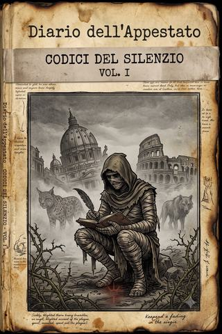

Terre Desolate · codice I
Il diario dell'Appestato
Il codice di un uomo del mondo di prima, divorato dalla piaga, che attraversa i regni dell'apocalisse portando un'arma da fine del mondo e l'unica ricchezza che gli resta: la memoria.
- ≈ 91 min di lettura
- a cura dell'Archivista
- dalle partite a Apocalisse
- anche in EPUB, 2,4 MB
Nota del Curatore
Codici del Silenzio — il primo manoscritto
Di tutti i codici che ho ritrovato fra le rovine, questo è quello a cui devo di più, perché è quello che mi ha insegnato il mestiere che poi ho fatto mio. Il suo autore si nomina una volta sola, nelle prime righe — Malcador Kanakis — e poi non si chiama più così per tutto il resto del diario: preferisce l’Appestato, senza pietà e senza vanto. Ho rispettato la sua scelta, e come lui lo chiamo l’Appestato quasi sempre; ma ho voluto che il suo nome restasse qui, in evidenza, perché un uomo che ha passato la vita a salvare i nomi degli altri merita che almeno il suo non vada perduto per pudore.
Veniva, unico fra le voci di questa collana, dal mondo di prima: ricordava le nostre stesse cose, le strade, i mari, le opere, e le ricordava con una precisione che fa male, perché è la precisione di chi sa di essere l’ultimo. Ma sotto la memoria del mondo, il suo codice ne custodisce una più piccola e più straziante: quella di una moglie e di due figlie che Carestia gli ha portato via — non uccise, ridotte in schiavitù — e che lui non ha mai smesso di cercare, né di sperare vive. Scriveva, diceva, «affinché non vada perso»; e questa frase, che ricorre nel suo codice come un battito, è diventata il principio stesso di questa edizione. I Codici del Silenzio esistono perché un uomo divorato dalla piaga, in fuga tra quattro cavalieri e sulle tracce di ciò che amava, decise che valeva la pena nascondere delle parole dentro un albero.
Raccolgo qui, in ordine di cammino, le tre parti in cui il suo diario ci è giunto: dal recupero della chiave sotto Roma, alla fuga per mare fino alla reggia della Stella del Mattino, alla marcia verso la bocca dell’inferno, dove il codice si spezza. Dico spezza, e non finisce, perché finire è troppo pulito per ciò che accade all’ultima pagina. So soltanto questo, e lo devo al lettore: le pagine seguenti, nella stessa cavità del medesimo albero malato, erano di un’altra mano, più dura e più giovane — quella di un barbaro che si firmava Ronan di Kimmeria, e il cui codice ho raccolto altrove. I due non si conobbero mai. Il caso, o qualcosa che gli somiglia, li posò a pochi centimetri l’uno dall’altro, e a me il compito, che non oso chiamare onore, di separarli con rispetto.
Non ho migliorato nulla. Dove tace, tace. Dove spera, ho lasciato che sperasse. È il minimo che gli debba: lui ha ricordato per tutti noi; io mi limito a non lasciarlo dimenticare.
Indice
Un solo codice, una sola voce, tre cammini.
- La cerca della chiave (dopo il silenzio — Montecalvo, Roma, il dominio di Guerra) — Come una compagnia raccogliticcia strappò al cuore di San Pietro un’arma da fine del mondo, e quanto costò, in bellezza e in memoria, portarla via.
- Fuga da Roma (il mare, il regno del gelo, Mont Saint-Michel) — Come, perso il sigillo che li nascondeva, finirono ospiti nel giardino dorato della Stella del Mattino, che chiedeva in cambio la cosa più preziosa: dimenticare.
- La bocca dell’inferno (il regno di Conquista) — Come, sulla strada del cavaliere della fame, l’Appestato trovò una speranza e la propria fine lo stesso giorno, e affidò l’una e l’altra a un albero malato e a uno sconosciuto lontano. A te.
Linea temporale
Gli anni si contano «dopo il silenzio» (d.s.), dall’apertura dei sigilli e dalle trombe del giudizio. Nel codice dell’Appestato le date esatte non compaiono — «vent’anni or sono», dice soltanto, delle trombe — ma la sequenza dei luoghi è ferma.
- Prima del silenzio — l’Appestato vive nel mondo di prima: ricorda l’Italia, l’arte, il servizio militare.
- ~20 d.s. — La cerca della chiave — Montecalvo (Appennini) → Roma: il Colosseo di Guerra, San Pietro, le grotte vaticane. Si recupera parte della chiave del sigillo di Guerra; si accetta il marchio del Trono.
- ~20 d.s. — Fuga da Roma — infranto il glifo che nascondeva la chiave, la fuga: il mare, il regno del gelo di Morte (Nizza/Marsiglia), la Manica, Mont Saint-Michel e la reggia di Lucifero.
- ~20 d.s. — La bocca dell’inferno — marchiati da Lucifero e mandati a cercare Abbadon, attraverso il regno di Conquista: l’esercito di Carlo Martello, la sua ultima battaglia. Qui il codice si spezza.
Le pagine trovate oltre l’ultima, nella stessa cavità, erano di un’altra mano: il codice di Ronan di Kimmeria, raccolto a parte.
La cerca della chiave
Mi chiamo Malcador Kanakis, anche se non lo dico quasi mai e quasi nessuno lo ricorda: per tutti sono soltanto l’Appestato. Lo scrivo qui in principio, il mio nome, perché è la prima cosa che il mondo dopo il silenzio ti toglie, e voglio che almeno su questa pagina resti — un uomo, non una malattia che cammina.
Scrivo queste annotazioni da anni, con la pervicacia di chi sa di stare perdendo e continua a giocare la partita per non dare al vincitore la soddisfazione di vederlo alzarsi dal tavolo. Le scrivo affinché non vadano perse come tutto il resto: come il mio mondo, come le sue strade e i suoi nomi, come il viso di mia moglie e delle mie due figlie, che ripasso ogni sera a occhi chiusi, per paura che la piaga mi tolga anche quello prima di togliermi il fiato.
Perché è questo, sotto le bende, il segreto che il mio sarcasmo tiene a distanza: non sono un eroe né un vendicatore. Sono un marito e un padre a cui Carestia ha portato via tutto e non ha avuto nemmeno la pietà di uccidere. Vidi mia moglie, le mie figlie e i miei vecchi spegnersi al seguito del suo cavallo nero, ridotti in schiavitù, privati perfino della forza di riconoscersi tra loro. E quando il cavaliere passò accanto a me, si fermò, mi guardò, e disse con una voce fatta di fine del mondo: «Tu, tu non sei completamente sotto il mio dominio, vattene.» Poi mi soffiò addosso la sua Piaga — e sentii le ossa contorcersi, questo braccio destro allungarsi, la mano rattrappirsi — e mi lasciò andare. Da allora due domande mi divorano più della malattia: perché mi ha risparmiato? Sono forse diventato, senza saperlo, un suo servo? E le mie figlie, mia moglie — sono ancora vive, laggiù, nel suo regno?
Tanti, troppi dei nati dopo il silenzio non sanno. Ma io so. Io ho visto. Io ero là, prima delle trombe, quando le colline avevano un nome e il pane si comprava invece di ammazzarsi per averlo, e una casa aveva dentro delle voci che mi chiamavano. È l’unica ricchezza che mi resta, e la più scomoda: la si porta, come le bende, come un braccio che non riconosco più per mio.
Montecalvo
Comincia a Montecalvo, questa storia, se «cominciare» ha ancora senso in un mondo che è tutto una fine dilazionata.
Montecalvo era, un tempo, un paese sulle dolci colline dell’Appennino — argilla, calanchi, un campanile. Adesso è una fetida serie di caverne, o meglio di spaccature, aperte nella roccia dallo sconvolgimento che ha ridotto quei calanchi a guglie di basalto tagliente. Ci eravamo rifugiati lì, io e i miei improbabili compagni, e con noi la nostra veggente: una poveretta sopravvissuta al cataclisma come me, ma con assai meno fortuna, o forse con assai più, non ho ancora deciso. Ha perso la vista guardando le colonne di fuoco del giorno del giudizio, e da allora vede. Vede ciò che agli altri è precluso, e sente voci che nessuno pronuncia — e in un mondo dove le potenze marciano visibili sulla terra, maestose e terrificanti, non so dire quale ne sia la fonte, né voglio saperlo.1
Fu lei a nominare il sigillo.
Lo disse con la voce che le viene quando non è più del tutto sua: uno degli orrori dell’armageddon, una delle armi atomiche del trono — e mi lasci passare il termine, chi leggerà: è una parola che nessuno conosce più, e la scrivo apposta, perché almeno su questa pagina resti la memoria di cosa eravamo capaci di costruire, prima. Un’arma da fine del mondo, e la sua chiave: quale tesoro, di questi tempi, e quale pericolo se cadesse nelle mani sbagliate — nelle mani, poniamo, di uno dei cavalieri. La recupereremo, dissi, e non solo per tenerla lontana dai folli. La recupereremo perché, se davvero è ciò che la cieca vede, potrebbe essere l’arma che cerco da quando la Piaga mi ha preso: l’arma per chiudere il conto con Carestia. Non lo dissi ai compagni, ma lo scrivo qui: quando penso a quel conto non penso alla vendetta come la intendono gli altri, il sangue per il sangue. Penso a un regno di schiavi affamati, e a quattro volti in mezzo a quel regno — se ancora esistono. Un’arma capace di ferire il cavaliere della fame non è, per me, uno strumento di morte. È l’unica chiave che potrebbe aprire una prigione. La sola che m’importi.
Ero io a guidare il gruppo. Ricordavo ancora abbastanza della geografia d’Italia — appresa tanto tempo fa, su un banco di scuola, in un secolo che agli altri suona come favola — da orientarci verso sud. Marciammo due giorni tra i rovi di piantasangue e gli insetti piagati, cercando acqua e cibo, e trovando soprattutto cose da cui essere mangiati.
La prima fu una Lonza.
Così la chiamo, perché non ho parola migliore, e perché il nome è dantesco e questo mi consola: una deforme belva che ricorda i giaguari delle foreste pluviali, se non fosse che questa creatura ultraterrena vomita fiamme e poi ne divora la cenere.2 Era sola, per fortuna, e cadde; e se non si fosse disfatta in pochi minuti dalla morte, come si disfano le bestie della piaga, ne avrei ricavato una pelliccia contro il freddo. Si prosegue, come sempre.
Poi il passo montano, troppo tranquillo. Assunsi la mia forma ferina e andai avanti a indagare — è uno dei pochi vantaggi della corruzione che mi consuma, potermi disfare del mio aspetto e prenderne un altro, e Dio solo sa quanto sia un sollievo, ogni tanto, non essere me stesso. Trovai tre cerberi in agguato. Li avvisai, e caddero uno dopo l’altro; ma erano troppi per un branco selvatico, e questo mi disse che dietro c’era una mano. C’era: banditi. Poveri predoni della miseria altrui, ben organizzati e del tutto convinti, fino all’ultimo istante, di essere loro i predatori. Persero il poco che avevano, e la loro inutile vita, e ci lasciarono in eredità un covo asciutto e caldo, con perfino qualcosa da mangiare — che di questi tempi è quanto di più simile alla grazia divina io abbia visto.
Avanzammo poi lenti, i giorni seguenti, e le terre devastate di Guerra sono demoralizzanti in un modo che non c’entra con la fatica. Erano dolci, quelle colline, prima: le ricordo verdi, le ricordo perfino sulle riviste, con i cipressi in fila e le case color miele. Ora sono guglie aguzze e velenose, irte di ghiaccio come dall’ultima glaciazione, e il sole non si vede più. Non si vede più da tanto che i nati dopo il silenzio non l’hanno mai visto: per loro è leggenda, o fiaba. Rimane, in noi pochi, il ricordo del mondo di prima come un sogno che si fa fatica a raccontare al risveglio; e a volte mi chiedo se non sia questa la vera apocalisse — non le trombe, non i cavalieri, ma il lento spegnersi della gente capace di ricordare che le colline, un tempo, erano dolci. Quando l’ultimo di noi chiuderà gli occhi, il mondo di prima morirà una seconda volta, e stavolta per sempre. È per rimandare quella seconda morte che scrivo.
I derelitti li trovammo la sera dopo, infilati in una caverna sotterranea come noi in cerca di riparo.
Erano l’ennesimo spettacolo desolante: un gruppetto di pezzenti lacerati, ridotti peggio di noi, tanto affamati e denutriti da far sembrare quasi in salute il mio corpo piagato — e ci vuole. Feci sgocciolare acqua pura dalle rocce col mio potere, per dissetarli almeno un poco dell’arsura polverosa del territorio, e quello, insieme a qualche razione, ci guadagnò la loro fiducia.
Li guardai bere, e mi tornò in mente — perché tutto, in me, torna in mente, è la mia condanna — che c’era stato un tempo in cui l’acqua usciva dai muri delle case a girare un pomello, e nessuno la ringraziava. Adesso questi la ricevevano come si riceve una grazia, con gli occhi, e io ne provai insieme pietà e un disagio che non ho mai saputo nominare del tutto. Perché mi resta il dubbio, ancora adesso che scrivo, se dar loro da bere sia stato un atto di misericordia o una condanna. Chi incrocia la nostra strada, in questo mondo, raramente ne esce meglio di come ci è entrato; e temo che quel poco d’acqua, e quella tana calda che ci offrirono per la notte, l’abbiano poi pagati a un prezzo che non avrei voluto conoscere. Ma questo appartiene a un’altra pagina, e a un altro rimorso.
Mentre masticavano con la voracità del parossismo, chiedemmo la via per la grande città rossa, come chiamano loro ciò che resta di Roma. Un brutto ceffo si offrì di guidarci, in cambio di fin troppo cibo per i miei gusti.
La notte lo vidi, nel doloroso dormiveglia che la piaga mi concede al posto del sonno, avvicinare in modo equivocabile la nostra arciera, e passare in fretta dalle parole ai fatti. Disgustoso, come le prede più miserevoli si scoprano predoni appena si presenta l’occasione. Avrei voluto intervenire, ma non ce ne fu bisogno: il potere che scorre nelle mie mani bastò a raggelare ogni lussuria residua in lui, temo per parecchi giorni a venire. Visto come gli era andata, e temendo di peggio, accettò un compenso assai più modesto, ci condusse alle prime macerie della periferia, e scappò a gambe levate.
Ci muovemmo con cautela nella devastazione seguita alle trombe, ed è qui che le ricordo così nitide, quasi fosse ieri e non vent’anni or sono. Penetrammo per chilometri nelle rovine — e da dietro un muro diroccato spuntò una decina di legionari di Guerra.
Il Colosseo di Guerra
Erano troppi per noi, e lo sapevano. Ma stranamente si divisero, e lasciarono passare alcuni uomini in divisa che ci ordinarono di seguirli: eravamo, dissero, «nuove reclute da testare».
Magnifico. Non bastava avere in odio uno dei cavalieri; finiremo per servirne un altro. Ma almeno, pensai, così entriamo in città — e in effetti ci fecero entrare proprio là dove non avrei mai creduto di rimettere piede: nel Colosseo.
Lo hanno ricostruito. Devo ammettere che, per un istante, prima che l’orrore prendesse il sopravvento sulla nostalgia, mi mancò il fiato: magnifico, davvero, più crudo e spartano dell’originale, ma in mezzo a tante macerie era come rivedere, per un attimo, una gloria della Roma che ricordo, quella delle riviste e delle gite scolastiche.3 Poi mi ricordai a cosa serve un’arena, e la nostalgia si spense da sola.
Dentro, non ci spiegarono nulla, se non che avremmo dovuto «farci valere» o soccombere.
Là, sul palco imperiale, sedeva Guerra. Distratto eppure bellicoso, troppo per noi allo stato attuale: una delle forze primigenie del mondo, solidificata in figura innanzi a noi, acclamata dalle folle sugli spalti come un tempo si acclamavano i cesari.
E le folle: mi chiesi chi fossero, in quella frazione di secondo che l’orrore concede alla curiosità. Non prigionieri. Non costretti. Gente venuta a guardare, con la stessa fame negli occhi che ricordavo negli stadi del mondo di prima, solo più nuda, senza il pretesto della squadra del cuore. E capii, allora, una cosa che ho continuato a rimuginare da allora: che Guerra è il più onesto dei quattro cavalieri. Carestia inganna, promettendo pane; il Trono contratta, promettendo benedizioni; ma Guerra non promette nulla, perché non ne ha bisogno. Si limita ad aprire l’arena, e gli uomini, a una certa fame di sangue, ci arrivano da soli, contenti, applaudendo. Non li recluta: li accoglie. È questa la sua lezione più nera, e la più difficile da annotare senza tremare: che il suo dominio non è costruito sulla paura, ma sul desiderio, e che di tutto ciò che l’apocalisse ha rivelato, questa è la rivelazione che avrei preferito non ricevere.
Non c’era tempo per le riflessioni. I pozzi gladiatori si aprirono e ne uscirono due bestie deformi — le lupe fameliche di Carestia.
Mi fermai, dentro, per una frazione di secondo, e non per paura. Come possono essere qui, mi chiesi, nel dominio di Guerra, a centinaia di leghe dal polveroso regno del loro padrone? È il genere di domanda che, prima delle trombe, avrei archiviato come oziosa. Ora ho imparato che le domande oziose sono le uniche che contano, e che ignorarle è il modo più rapido di morire. Ma non c’era tempo nemmeno per quella. Crepate, bestie dannate, come il vostro padrone: e furono le prime prede della mia vendetta, e quale soddisfazione. Poi, come seconda prova, altri affamati, altri fedeli di Carestia. Se non fosse impossibile, direi che una più alta volontà, quella sera, mi sorrideva.
Superata la prova, ci ritrovammo prigionieri nel campo di Guerra, come suoi futuri soldati.
Almeno il cibo era caldo, anche se insipido — non che per me faccia gran differenza, la piaga mi ha tolto quasi tutti i sapori insieme a quasi tutto il resto. Eccoci dunque al servizio dei grandi criminali della storia: nientemeno che il fu Gran maresciallo Tito, il macellaio dell’Istria, che fortuna per i miei compagni non sapere di chi si tratti. Speriamo non lo facciano arrabbiare. Vengono da epoche diverse, i miei soci, e ci sono nomi che a loro non dicono nulla e a me dicono troppo: è una delle tante solitudini di chi ricorda.
Il campo era una città di tende e di ordini, brulicante di reclute come noi — disperati raccolti nelle rovine, che avevano barattato la libertà per un pasto caldo e la promessa di non morire subito. Li facevano marciare, li dividevano in centurie, davano loro nomi di reparto e un pezzo di ferro da stringere; e li guardavo diventare, un ordine dopo l’altro, ciò che serviva a Guerra: non uomini, ma unità, che è il modo più economico di uccidere un uomo, perché lo uccidi senza sprecare una lama. L’avevo già visto, questo, in piccolo, ai miei tempi, ed è forse per questo che disertai col cuore leggero: riconoscere una macchina è il primo passo per non diventarne un ingranaggio. I miei compagni no, non l’avevano vista mai — vengono da secoli in cui la guerra aveva ancora la faccia di un uomo — e li osservavo guardarsi intorno stralunati, cercando il nemico da odiare, senza capire che il nemico, lì, era proprio l’ordine mite e ragionevole con cui ci stavano trasformando in truppa.
E poi c’è la nostra giovane baluarda, che si comporta come una poco di buono, e non ha la minima idea di che fine facciano le sgualdrine in un campo militare — o forse ce l’ha, e ha deciso che le conviene comunque. Non è affar mio. Finché terrà le gambe aperte, nessuno le chiederà di aprire la bocca, e in un campo di Guerra è già molto.
Ma come fuggire? San Pietro è là, poco lontano, e Massimo Pericolo — il nostro monaco, che ancora non si è abituato al nomignolo che io e il predicatore gli abbiamo affibbiato4 — potrebbe guidarci agevolmente, se solo. Se solo si potesse superare la palizzata di legionari. Quale lucida follia, mi domando, può aver partorito un muro di cinta fatto di inesorabili guerrieri-scheletro, che non dormono, non mangiano, non si distraggono, e non hanno una sola debolezza umana su cui far leva?
Ne ha una, il vecchio Tolomeo. E, per una volta, il nostro profeta menagramo sta per rivelarsi utile.
Fuga verso San Pietro
Il suo travestimento da maresciallo — Tolomeo ha, tra i suoi pochi pregi, una stregoneria che gli presta la faccia di chiunque — ci permise di uscire dal cancello est con una scusa, e di dirigerci rapidi verso la cattedrale prima che qualcuno si accorgesse della nostra diserzione.
Quale ironia. Disertare dalle armate di Guerra in persona il giorno stesso dell’arruolamento. Lo avessi fatto, a suo tempo, durante il mio servizio militare — ma allora non ne ebbi il coraggio, e passai mesi a marciare per un’idea di ordine che il mondo ha poi cancellato in una notte di trombe. Adesso invece disertavo con la leggerezza di chi non ha più niente da perdere se non la memoria, che è l’unica cosa che nessun esercito ti può togliere, e l’unica per cui, mi accorgo scrivendo, sarei disposto a marciare ancora.
Uscimmo che era ancora giorno, o quel che passa per giorno sotto un cielo senza sole, e attraversammo le rovine della città a passo svelto e a testa bassa, sfruttando i muri diroccati come si sfruttano i sassi di un guado. Roma, la mia Roma, ridotta a un labirinto di macerie pattugliato da scheletri in marcia: riconoscevo, ogni tanto, la curva di una via, il moncone di un arco, e ogni riconoscimento era una fitta, perché camminavo insieme su due città, quella che c’era e quella che ricordavo, e nessuna delle due mi voleva bene. Evitammo due pattuglie di legionari, immobili come sentinelle di un incubo, e una terza la seminammo nella forma di un gatto rognoso che li precedette a saggiare il vicolo giusto. La loro ostinazione è cieca, per fortuna: non leggono i nostri intenti, non fiutano la diserzione, marciano e basta, ed è l’unica misericordia che Guerra concede, quella di rendere i suoi servi troppo stupidi per l’astuzia. Passammo così, di rovina in rovina, col cuore in gola e la chiave ancora da conquistare, fino a che le macerie si aprirono, e la vedemmo.
Ed ecco San Pietro. Incredibile quanto sia rimasta intatta, dopo l’apertura dei sigilli e le trombe del giudizio: ancora maestosa come un tempo, a parte i minacciosi cherubini che le volano tutt’intorno, impedendoci l’approccio. Come passare, mi domandai. Come.
Il patto
Fu per un pelo. Assunsi la forma di una donnola ed evitai per un soffio uno di quei dannati pennuti angelici, che quasi mi acchiappava nonostante la mia velocità: la comunione con tutti i viventi della piaga è utile, ma il rischio di venire mangiati non è cosa semplice da gestire, per un uomo. Tolomeo, nel frattempo, cercava di arrampicarsi da una delle finestre — quel vecchio, che non ha più la forza di un tempo, ammesso che l’abbia mai avuta ai suoi giorni.
Poi il cherubino atterrò innanzi a me, ormai prossimo a entrare.
È curioso — lo annoto per i posteri, che forse studieranno queste creature con più calma di quanta ne avessi io in quel momento — come i cherubini girino attorno alla chiesa senza mai entrarvi, eppure si tratti di un luogo sacro, il luogo per eccellenza della fazione del Trono. Perché? Non ebbi risposta allora, e l’ebbi solo dopo, dal babilonese.
Il cherubino era tanto maestoso quanto freddo, e chiaro nelle sue condizioni: recuperare il manufatto all’interno, e consegnarlo a loro soltanto; in premio, il marchio del Trono su di noi, e con esso tutte le sue benedizioni. Un’offerta «generosa», che dire, se solo ci si potesse fidare di loro.
Perché è qui l’inganno più sottile, e lo annoto perché i posteri non ci caschino come stavamo per cascarci noi: il Trono non minaccia. Non ne ha bisogno, come non ne ha bisogno Guerra, ma per la ragione opposta. Guerra ti dà ciò che vuoi; il Trono ti dà ciò che dovresti volere — la protezione, la benedizione, un padrone giusto — e te lo porge con la mano aperta, così che rifiutarlo sembri, più che imprudenza, ingratitudine. Il marchio non è una catena che ti mettono addosso: è una firma che ti chiedono di apporre tu stesso, con gratitudine, in fondo a un contratto scritto in una lingua che non ti fanno leggere. E la benedizione, sotto, è sempre la stessa: sarai nostro.
Accettammo. Non per fede, e nemmeno per convenienza: per evitare guai, e con la riserva mentale di trovare, poi, un modo. Accettai un guinzaglio per schivare un cappio, che è la scelta che questo mondo ci lascia sempre, travestita da libertà. Ma un guinzaglio accettato è più difficile da spezzare di uno imposto, perché per spezzarlo devi prima ammettere di essertelo messo da solo; e me lo sono messo da solo, e lo scrivo qui, nero su bianco, perché il giorno in cui lo spezzerò questa pagina mi ricordi da dove ero partito.
Mentre varcavamo la soglia, Samsu-Iluna notò i glifi tracciati rozzamente sulle pareti esterne dell’edificio, e ne parlò come di potenti iscrizioni mistiche, simboli di un antico linguaggio che ha potere sugli ultraterreni. Forse, disse, all’interno avremo pace da loro. Forse. Il cherubino ci cedette il passo, lo sguardo altezzoso, o forse rassegnato all’ennesimo fallimento delle sue pretese; e mi chiesi come debba essere, per un immortale, dover attendere con frustrazione un fallimento dopo l’altro, per secoli, sapendo di avere tutto il tempo e mai la vittoria.
La bellezza profanata
Entrammo nella un tempo gloriosa cattedrale, e subito mi diressi verso la Pietà.
Si era salvata. In un letto di schegge marmoree, intatta, la meraviglia del rinascimento — e non osai avvicinarmi, per timore di rovinarla col solo respiro. Restai lì, davanti a quattro secoli e mezzo di silenzio bianco, e per un istante non fui un uomo appestato in un mondo morto: fui un ragazzo davanti a una cosa più grande di lui.5
L’avevo già vista, una volta, in un’altra vita. C’era la fila, allora, e un cordone, e una lastra di vetro a proteggerla da chi avrebbe voluto toccarla — perché già prima delle trombe ci si difendeva dagli uomini, ma lo si faceva col vetro, non con le lame. Ricordo il brusio delle lingue di mezzo mondo, i lampi delle macchine che rubavano immagini, una guida che spiegava a bassa voce, e me, distratto, che pensavo ad altro, come si pensa ad altro quando si crede di avere davanti tutto il tempo del mondo per tornare a guardare meglio. Non tornai mai. Nessuno torna mai, ed è questa la sola morale che il mio secolo abbia saputo insegnarmi: che le cose le guardiamo sempre per l’ultima volta senza saperlo, e che il sapere arriva dopo, quando non resta che l’inchiostro.
E adesso eccola di nuovo davanti a me, senza vetro, senza fila, senza nessuno al mondo che sapesse ancora cosa fosse — salva per miracolo o per beffa, in attesa che qualcuno la finisse.
Poi il mago, il barbaro babilonese Samsu-Iluna, la toccò.
Non gliene faccio del tutto colpa: viene da un tempo e da una terra dove quella pietra non significa niente, e dove toccare è il modo in cui si conosce. Ma io lo so, cosa significa, e vederla animarsi fu come veder profanare una tomba di famiglia. La nobile figura marmorea si trasfigurò in un’orrida costruzione fluttuante, che scatenò su di noi il suo fuoco interiore, e non ci fu scelta se non distruggerla. Quale tragedia, dover infrangere una simile opera. Ma questo, ormai, è il destino di tutto, in questi tempi: la bellezza non muore di vecchiaia, muore uccisa da chi non sa di ucciderla, e a volte per mano di chi la ama, che è peggio.
Ci accasciammo a terra, feriti. La nostra baluarda, invece di riposare, andò al fonte battesimale nell’alcova di fronte, in cerca forse d’acqua, e in effetti lo trovò colmo di un ceruleo liquido dissetante — un segno, gridò qualcuno, della benevolenza di qualche potenza amica degli uomini. Quale stoltezza. Nessuna potenza è con gli uomini, in questa epoca; e infatti dal fonte sublimò un altro Spirito di Salomone, e di nuovo fummo immersi nella violenza dei tempi.
Fu poi il coro a chiamarci, guidati dal bardo in preda all’ennesima epifania.
Sopra una tomba, dentro una teca, una grande lama di antico lignaggio: una spada crociata, il filo luccicante di potere ultraterreno. Se ne impossessarono, ma la lama rifiutò con dolore il nostro paladino. Rifiutò Beomondo — il crociato, il devoto, l’uomo che quella spada avrebbe dovuto scegliere fra tutti — e si diede al profeta. A Tolomeo. Al menagramo lascivo e codardo che poco prima si arrampicava sgraziato a una finestra.
Beomondo ne fu ferito più che da qualunque colpo. Non lo diede a vedere — è un uomo d’altri secoli, di quelli che le ferite se le tengono — ma io lo vidi, e per una volta non ebbi voglia di ironia. C’è una crudeltà, in questo mondo, più raffinata della fame e delle lame: è quella di dare le cose giuste alle persone sbagliate, e di farlo con l’aria di un giudizio.6
«Ho dato la vita per una lama come questa», mi disse piano, più a se stesso che a me, guardando la spada nella mano storta del profeta. «E lei sceglie lui. Un uomo che mente per mestiere.» Non seppi cosa rispondergli, io che di mestiere ricordo e non credo. Avrei potuto dirgli che le lame non scelgono, che è il caso, che è la ruggine del caso a farci vedere disegni dove non ce ne sono. Ma lo guardai — il crociato fuori tempo, l’ultimo devoto di un cielo che gli aveva appena voltato le spalle in favore di un ciarlatano — e mi tenni la mia saggezza da miscredente, perché ci sono momenti in cui togliere a un uomo la sua ferita è più crudele che lasciargliela. Pensai soltanto, e lo penso ancora: se davvero in questa guerra tra le potenze c’è un disegno, e se davvero un’arma santa preferisce la menzogna alla fede, allora è una guerra in cui l’inganno vale più della devozione — e non è un mondo in cui vorrei che vincesse il cielo.
Per alleviare la sua frustrazione ci soffermammo presso la statua di San Longino, di cui il crociato era fervente devoto, e dietro trovammo una stretta alcova che si perdeva nel buio — buio che attirò il templare. Lo seguii. In fondo, una teca, e dentro un frammento di legno: la reliquia della lancia del santo. Beomondo non si trattenne — aveva dato la vita per quella lancia, ai suoi tempi, durante le crociate — e la infranse per prenderla. E appena la infranse, un rumore di frattura giunse dall’esterno.
Una statua vivente. Un capolavoro classico mutato in orrore primevo, che cercava noi. I nostri colpi erano deboli, e persino il potere di Massimo Pericolo poco poteva contro il bianco marmo; più efficaci gli attacchi sonici, i miei, del bardo, del cabalista, che aprirono ampie crepe sul suo corpo fino a infrangerlo. Poi toccò spalare le macerie e liberare Beomondo prima che soffocasse nella fine polvere marmorea, che placai con una mia breve pioggia magica.
Il crociato tossì, e non ringraziò, e strinse la sua reliquia. Ognuno, in questo mondo, si aggrappa a ciò che ha perso: lui a una scheggia di legno santo, io a una lingua morta di riferimenti che nessuno coglie. Non siamo così diversi. Solo che la sua reliquia, almeno, si può tenere in mano.
La chiave
Proseguimmo l’esplorazione di quel luogo sacro. Molte delle antiche creazioni artistiche erano preservate — almeno quelle che non volevano ucciderti, il che, di questi tempi, è già una forma di curatela.
Ci avvicinammo all’antica sagrestia, sbarrata da strani glifi tracciati su rari fogli di carta. Carta. Da quanto non ne vedevo un pezzo integro? Mi fermai a guardarla come un affamato guarda il pane, poi mi ricordai che era una trappola. Secondo il babilonese si trattava di incanti sconosciuti; ma la nostra adepta di Lilith li identificò per quel che erano: scritti di morte, il potere di Guerra reso parola, una sorta di dinamite arcana pronta a esplodere al contatto. Bruciai i sigilli dalla distanza, provocandone l’esplosione come fuochi d’artificio del capodanno — per quando si festeggiava, o per quando esisteva un capodanno da festeggiare.
Dietro, un buon bottino: vesti pulite e integre, coppe d’oro non bucate, vasellame di vetro intatto. Roba da scambiare a Babilonia con cibo e informazioni, anche se mi duole lasciare a quei grassi profittatori le reliquie del mio passato. Le vesti, però — le tonache dei prelati — le tenni. Non sapevo ancora quanto ci avrebbero salvato la pelle; lo scrivo qui perché, riletto col senno di poi, sembra quasi che una mano ci guidasse. Non ci guidava nessuno. Solo la fortuna, che è l’unico dio rimasto in circolazione, e il più capriccioso.
Il resto della cattedrale fu una lenta processione di statue che si animavano e di putti che ci tiravano sassolini dall’alto delle volte come bimbi dispettosi, se non fosse che i sassolini erano letali. Non li racconterò tutti, quei combattimenti: si somigliano, come si somigliano tutte le violenze, ed è una delle cose che il mondo dopo il silenzio insegna presto — che la battaglia, ripetuta, diventa noiosa prima ancora di diventare fatale.
Ne ricordo uno solo, e non per come finì. Nell’alcova di una santa che reggeva un velo — Veronica, quella che, dice la leggenda, asciugò un volto e se lo trovò impresso addosso — il bardo si infilò a saccheggiare mentre la statua si animava. Ne uscì con un lembo di tessuto, un’altra reliquia del Trono, sigillata e dimenticata lì da chissà quanto; e nel frattempo noi riducevamo in schegge la santa che l’aveva custodita. Ecco il nostro mestiere, ridotto all’osso: sfondiamo la custode per prendere ciò che custodiva, e chiamiamo bottino la differenza. Non è diverso da quel che fa Guerra, o Carestia; solo, noi lo facciamo in piccolo, e ci raccontiamo che sia necessità. Forse lo è. Ma un velo strappato a una madre di marmo pesa, sull’anima di chi ancora ricorda cosa fosse una santa, più di quanto pesi la reliquia in mano al bardo.
Ciò che conta è dove ci portarono, quei corridoi di capolavori infranti: giù, nelle grotte vaticane, nelle antiche cripte papali, dove le creature di terra e roccia non ci seguirono, quasi un’isola in mezzo alla tempesta.
Là, davanti alla tomba del primo papa, una massa informe che incenerii per non correre rischi — che la cenere alimenti la terra riarsa. E sopra la tomba, incastonata in una grande croce, una teca infrangibile, e all’interno un manufatto insidioso, che pareva — mi si perdoni il paragone, l’ultimo che avrò occasione di annotare per un pezzo — un’opera d’arte moderna.7
Tolomeo usò le chiavi per aprire la teca, ed esplose in un pianto di sangue. Una visione lo travolse: Guerra servo, prima del Trono o poi dell’Abisso, e sempre una lama a dominarlo — una lama dall’elsa impossibile, identica al manufatto dentro la teca. E bravo profeta, pensai: almeno stavolta hai fornito informazioni utili, per quanto terribili. Perché quella è parte della chiave del sigillo di Guerra, e la domanda ora è se anche la lama sia qui, o nascosta altrove.
Tolomeo si incaricò di trasportare il manufatto, ma dovette tenerlo in mano: è talmente tagliente da stracciare qualunque panno si provi ad avvolgerlo. Non per nulla è la chiave di Guerra — inarrestabile come il suo cavaliere.
Girammo per le grotte in cerca di un’uscita alternativa — l’antico passaggio per Castel Sant’Angelo, o la via oltre le cripte — qualunque cosa per evitare il muro di angeli e diavoli all’esterno, e la vendetta di Guerra se ci avesse messo le mani addosso. Rimediai qualche testo antico, che in questa epoca vale più dell’oro, e certo mi è più caro. Il silenzio, la polvere, le tombe infrante — tutte vuote, tranne una, dove un poveretto era stato murato così bene da morire una seconda volta di stenti dentro il proprio sepolcro di marmo. Quale ironia. Ne prendo nota, che i posteri sappiano che perfino le tombe, qui, tradiscono.
E poi il gigante.
Un possente Campione di Guerra, di quelli che avevano nominato al campo e nell’arena, ma che non avevamo mai visto così da vicino. Il suo tridente sfiorò Beomondo. Ed era incatenato — ecco la cosa che mi restò impressa, e che ancora non so spiegarmi: incatenato, lui, un campione del cavaliere, nel cuore del dominio del Trono.
Perché? Un campione di Guerra prigioniero sotto la basilica del Trono. O il Trono lo aveva catturato — e allora la guerra tra le potenze è più antica e più fitta di quanto le apparenze concedano, e si combatte anche nelle cantine, a porte chiuse, con prigionieri di cui nessuno sa; oppure — pensiero peggiore — qualcuno ce lo aveva messo, quel gigante, a guardia di qualcosa, e le catene servivano non a tenerlo dentro ma a tenerci fuori noi. Non ebbi risposta, e la lascio qui, tra le mie domande oziose che non lo sono mai, perché i posteri, se ci saranno, capiscano che di questo mondo non abbiamo mai avuto la pianta, ma solo qualche corridoio percorso al buio. Forse, di là da lui, c’era davvero una via d’uscita; ma non potevamo affrontarlo così, senza un piano. Lo affrontammo lo stesso, come sempre — e la nostra Molly ci rimise, colpita in pieno dal mazzafrusto del Campione. Buffo, mi ricordò il vecchio gioco del bowling, con lei nella parte del birillo. Lo scrivo con la freddezza di chi ha imparato a ridere per non contare i morti; ma la curai, e sopravvisse, e me ne vergogno un poco, della battuta. Solo un poco.
Il rogo del Trono
Esplorai i dintorni della basilica grazie alla mia capacità mutante — uno dei pochi aspetti positivi della piaga, ammesso che così si possa definire, ma almeno mi permette di passare sotto il naso di angeli e legionari. Trovai forse una via di fuga. Ma scappare a piedi con la pesante croce e la chiave non sarebbe stato semplice: il peso ci limitava, e il glifo isolante che ci dava pace dagli ultraterreni bloccava anche i nostri poteri. Come fare, come.
Il suggerimento di Tolomeo era folle, ma aprì a una soluzione. Appena calata la sera, uscimmo dal passaggio delle grotte, cercando un pertugio tra le pattuglie di Guerra. E fu allora che la catastrofe eruppe inaspettata.
Quando superammo l’invisibile scudo cabalistico dei glifi a protezione della cattedrale, l’edificio intero si incendiò di un fuoco ultraterreno, come se avessimo strappato la mano da una diga. E la chiave del sigillo brillò a sua volta, tradendoci — ma per fortuna feci in tempo a oscurarla con la mia coperta, giusto in tempo. L’eruzione mistica richiamò le schiere angeliche, che subito si trovarono a battagliare coi giungenti reggimenti dell’Abisso — i demoni dell’assenzio, colonne di fumo amaro che il cielo vomitava come da una ferita — e anche le forze terrestri di Guerra, i suoi legionari di ossa, si infilarono nello scontro, in un cataclisma di lame e saette ultraterrene.
Mi fermai un istante, sotto la coperta, a guardare. Non avrei dovuto — ogni istante era prezioso — ma è più forte di me, guardo, perché guardare e ricordare è l’unica cosa che so fare che le potenze non sanno fare: loro combattono e basta. Ed era, devo confessarlo, di una bellezza terribile: la cattedrale in fiamme bianche, gli angeli che scendevano come lame di luce, i demoni che salivano come colonne di notte, e in mezzo gli scheletri di Guerra che colpivano gli uni e gli altri con la cieca imparzialità della guerra, che è l’unica cosa davvero democratica rimasta. Le tre potenze che si contendono il cadavere del mondo, tutte insieme, sopra le nostre teste, per un oggetto che tenevamo stretto sotto una coperta di lana rattoppata. Se avessi ancora avuto il gusto di ridere, avrei riso. Mi limitai a prenderne nota, nella testa, per queste pagine: che l’apocalisse, vista da vicino, è insopportabilmente magnifica, e che è proprio questo il suo insulto più grande.
La mia forma piagata di mulo da soma ci permise di fuggire più in fretta, ma non di evitare di essere scorti da un cherubino. Attimi di sudore. Poi il nostro travestimento da prelati — le tonache rubate nella sagrestia — sortì il suo effetto, e ci scambiò per qualcuno affiliato al Trono; o almeno parve, perché la creatura riprese la sua battaglia contro l’Abisso e ci lasciò andare. Così ci allontanammo rapidi nel buio della notte, lasciandoci alle spalle i fuochi della battaglia delle potenze.
Il conto
Ci allontanammo, e presto avremmo dovuto guardarci le spalle da probabili inseguitori. Ma per un momento, nel buio, ci fermammo a fiatare, e feci il conto — perché è quello che faccio, io, invece di pregare: conto ciò che resta e ciò che è costato.
Avevamo la chiave. Una parte di essa, almeno: un’arma da fine del mondo, che brilla come un faro a chiamare su di noi ogni potenza del creato, e che dovremo portare non si sa più per quanto, nascosta sotto una coperta come si nasconde una vergogna. Avevamo, incisi addosso, il marchio del Trono e il suo guinzaglio, che ho promesso a me stesso di spezzare e che, scrivo per onestà, non ho la minima idea di come si spezzi. E ci lasciavamo dietro, tra i fuochi, la cattedrale che aveva attraversato illesa l’apocalisse, e dentro di essa la Pietà che avevamo dovuto distruggere con le nostre mani.
È questo il conto, e non torna, perché i conti di questo mondo non tornano mai: si esce sempre da ogni vittoria avendo pagato più di quanto si è preso, e la moneta è sempre la stessa, la bellezza e la memoria, le uniche due cose che non ricrescono.
Ma io le annoto lo stesso, la bellezza e la memoria, su questi fogli che nasconderò come nasconde i suoi chi ha capito che il silenzio, se lo lasci fare, si mangia anche il ricordo di ciò che ha divorato. Non glielo concedo. So, ho visto, ero là. E finché questa mano regge la penna, un pezzo del mondo di prima resta in piedi — non a San Pietro, che brucia alle nostre spalle, ma qui, in queste righe, che valgono meno dell’oro e più di tutto ciò per cui gli uomini, stanotte, si stanno ancora ammazzando.
Fuga da Roma
Riprendo il diario dove l’ho lasciato: in fuga, con addosso un’arma da fine del mondo e il marchio di un padrone che non ho scelto. Credevo, allora, che il pericolo fosse dietro di noi — i fuochi di San Pietro, la vendetta di Guerra. Non avevo ancora imparato la lezione di queste pagine, che scrivo apposta perché altri la imparino a minor prezzo: che in questo mondo il pericolo peggiore non ti insegue mai. Ti aspetta, e ti sorride, e ti offre da bere.
La tana devastata
Erano già quattro giorni che marciavamo, e il peso della croce si faceva sentire — e non è un eufemismo, di questi tempi, perché la croce era di pietra vera, e la portavamo a turno come si porta una colpa. Dentro, protetta, la chiave; e attorno alla chiave, io e i miei compagni, e attorno a noi un mondo che ci voleva morti in almeno quattro modi diversi.
Avevamo evitato le pattuglie del Trono e dell’Abisso, e i legionari di Guerra che imperversano; ormai erano lontani, la loro vuota ostinazione incapace di leggere i nostri intenti. Ma la strada del ritorno passava per un luogo che avrei voluto aggirare, e non si poté.
La tana dei derelitti. Quelli che ci avevano dato rifugio e informazioni, all’andata, in cambio di acqua non contaminata.
Non c’era più nessuno. C’era lo scempio. Non sto a descrivere cosa resta di un gruppo di poveri disgraziati quando qualcuno passa a chiedere conto di chi hanno aiutato — dirò solo che lo spettacolo contorse perfino il mio fisico piagato, e ce ne vuole. Qualcuno era passato di lì, dopo di noi, e aveva fatto domande, e i derelitti non avevano saputo rispondere altro che la verità: erano passati dei viandanti con una croce, e li avevamo aiutati. Bastò a condannarli.8
Mi aggirai tra i resti più a lungo di quanto servisse, e più a lungo di quanto i miei compagni approvassero. Lo faccio sempre, coi luoghi del massacro: li leggo, come un tempo si leggeva un giornale. Da come cadono i corpi, da cosa manca e cosa resta, si capisce chi è passato. Qui non mancava il cibo — segno che gli assassini non avevano fame, e dunque non erano derelitti come le vittime, ma qualcosa di meglio nutrito e peggio intenzionato. Non mancavano le poche cose di valore — segno che non cercavano bottino, ma informazioni. Erano venuti a sapere, non a prendere. E avevano saputo, e poi avevano cancellato la fonte, come si cancella una frase scomoda. Metodici. Il che restringeva il campo: la fame è disordinata, la fede è metodica. Erano gente di una delle grandi fazioni, non predoni.
Lo avevo previsto, e questo è il peggio. L’avevo scritto, quasi, tra le righe del mio rimorso, all’andata: che chi incrocia la nostra strada raramente ne esce meglio di come ci è entrato. Feci sgocciolare, per abitudine o per penitenza, un po’ d’acqua pura sulle pietre, per dei morti che non avevano più sete. E annotai mentalmente, come faccio, ciò che di loro poteva ancora essere salvato: non i corpi, quelli appartengono ormai alla terra riarsa, ma il fatto che erano esistiti, che una notte avevano diviso con degli sconosciuti l’unica ricchezza che avevano, l’acqua e un tetto, e che per questa gentilezza — non per un delitto, per una gentilezza — erano stati cancellati. Se non lo scrivo io, chi? Le grandi fazioni non tengono il registro dei piccoli buoni che sopprimono: lo tengo io, su questi fogli, ed è forse l’unica utilità che mi resta.
Poi ci rimettemmo in cammino, tra i monti, al riparo almeno dalle pattuglie che vengono dal cielo. Il custode della memoria porta anche questo, tra le cose da non dimenticare: i nomi di chi è morto per averci offerto un tetto. Non li sapevo, i loro nomi. È forse la cosa che mi pesa di più.
La croce nel burrone
Fu il vecchio a rovinare tutto, come spesso accade quando il vecchio si stanca.
Non dirò che lo fece apposta, Tolomeo, il nostro iettatore figliato dai coccodrilli del Nilo; dirò che si stancò di portare la sua parte, e che invece di chiedere aiuto lasciò scivolare il carico, e la croce vaticana rotolò giù per un burrone come rotola una cosa che il mondo ha deciso di riprendersi. La sentimmo infrangersi, in fondo, con un suono che non dimenticherò: il suono di una protezione che finisce.
Scendemmo le pareti scoscese a recuperare il sigillo, pregando che non fosse in pezzi anche quello. Non lo era. Il sigillo e la sua teca di cristallo erano intonsi — ma la croce, e con lei il glifo cabalistico che vi era inciso, giacevano in mille frammenti sul fondo.
Impiegai un momento a capire cosa significasse, e quando lo capii mi si gelò il sangue più di quanto già non me lo geli la piaga. La croce e il glifo non erano un ornamento. Erano un sigillo di proibizione: nascondevano la chiave agli occhi degli esseri superni. Finché li avevamo con noi, potevamo passare sotto il naso di un cherubino e non essere visti. Adesso non più. Adesso la chiave era di nuovo un faro, e noi le falene attorno.
Raccolsi i frammenti della croce, uno per uno, con una cura che sorprese perfino me. Non servivano più a niente — un glifo infranto è inchiostro sparso — ma è più forte di me: davanti alle cose rotte del mondo di prima mi vengono le mani di un restauratore, anche quando non c’è più niente da restaurare. Samsu-Iluna, quando si fu ripreso dal torpore del viaggio, li esaminò e scosse il capo: il potere se n’era andato con la frattura, disse, come il vino da un’anfora incrinata. Non si poteva rifare. Alcune cose, quando si spezzano, si spezzano e basta, e questa era di quelle.
Abbattemmo, sul fondo del burrone, un grosso verme tentacolare — una creatura mutata dalla piaga, di quelle che non avevo mai visto tanto grosse e aggressive, ma almeno commestibile; mi ricordava vagamente le seppie dell’Egeo, di quando l’Egeo era un mare e non una leggenda.9 Ne conservai un campione, come conservo sempre i campioni delle bestie della piaga: studio il male che mi mangia, nella speranza vaga e ostinata di trovarci, un giorno, la sua crepa. Ma non era il verme a preoccuparmi. Era il cielo, ora aperto su di noi come un occhio. Camminammo il resto della giornata con quella sensazione addosso, la peggiore che conosca: quella di essere guardati. Ogni ombra sulla cenere pareva un’ala, ogni silenzio l’attimo prima di un battito. Avevamo attraversato Roma nascosti da un glifo, e ce n’eravamo quasi dimenticati, come ci si dimentica di un tetto finché non piove. Ora pioveva.
Non c’era scelta. Con il sigillo di proibizione infranto, gli esseri superni ci avrebbero trovati in superficie in poche ore. Dovevamo scendere sottoterra, nelle grotte di fronte, e restarci finché le acque non si fossero calmate.
L’albero e la serpe
Il buio non aiutava, e la lanterna improvvisata col grasso del verme non era granché; ma risparmiava le forze e dava un poco di calore, qui nel cuore della terra. Abbattemmo altri due vermi — deperiti, non un vero ostacolo — e ci addentrammo lungo il passaggio più asciutto.
Non lo avessimo fatto. E invece lo facemmo, e per questo scrivo, ora, su una caravella malmessa disturbata dal rollio; ma sto divagando, come fanno i vecchi, e vecchio lo sono anche se non quanto Tolomeo. Torniamo alla grotta.
Era ampia, illuminata da una voragine sulla volta, e al centro, su un cumulo di rocce, un albero. Un albero rigoglioso e verdeggiante, in quel mondo di cenere: la cosa più innaturale che avessi visto, e ne ho viste. Ma non fu l’albero a lasciarci a bocca aperta. Fu la serpe colossale che gli avvolgeva intorno le spire, e che si rivolse a noi, nella lingua degli uomini.
Ho un ricordo confuso di quell’incontro — confuso perché la creatura lavorava proprio su questo, sulla confusione, sul rammollimento della volontà. Ricordo la voce suadente, il miele che colava dai suoi sussurri, la proposta melliflua: sostenere il suo benevolo signore, il portatore di luce, che ora risiede nel tempio principe del suo più odiato fratello, a Mont Saint-Michel.10
Non parlava a tutti allo stesso modo, la serpe; e fu questo a impressionarmi, in mezzo al torpore. A ciascuno offriva la sua misura. A Samsu-Iluna, il babilonese, sussurrò di sapienze antiche, di biblioteche intatte oltre il mare, di formule che il suo maestro Salomone non aveva mai osato scrivere — e vidi gli occhi del cabalista accendersi di quella fame precisa, la fame di sapere, che è la più nobile e la più facile da corrompere. A Tolomeo promise visioni chiare, finalmente, invece del solito pianto di sangue: un futuro leggibile come una pagina. Alla nostra baluarda, non so cosa; ma rise, e la sua risata mi disse che aveva accettato. A ognuno il suo prezzo, e a ognuno l’illusione di pagarlo lui, quando è sempre il compratore a essere venduto.
A me non offrì nulla, la serpe. Mi guardò soltanto, con quegli occhi vecchi come il primo inganno, e capii che aveva già annusato ciò che porto e ciò che sono: un uomo che ha già dato tutto a Carestia e non ha più merce di scambio, se non una memoria che nessun serpente sa cosa farsene. Non si tenta chi non ha più niente da perdere. È l’unico vantaggio della rovina totale, e me lo tenni stretto.
Non credevo fosse ancora in piedi, Mont Saint-Michel; a dire il vero non credevo fosse rimasto in piedi altro al mondo, a parte la corrotta Babilonia. E ricordo, con vergogna, come i miei stolti compagni si siano fidati del rettile, circuiti dal miele dei suoi sussurri tentatori. Solo io e Beomondo rimanemmo a opporci — il miscredente e il crociato, l’uomo che non crede a niente e l’uomo che crede a una cosa sola: le due sole difese, si vede, contro un serpente. Chi crede a tutto, come i sedotti, e chi ha una fede tiepida, come i più, davanti alla lingua biforcuta non hanno scampo. Beomondo strinse la sua lancia e recitò a mezza voce parole di un rito che nessuno ricorda più; io non recitai niente, ché non ho riti, ma pensai ai nomi dei derelitti che non avevo salvato, e il dolore di quel pensiero fu, curiosamente, la mia corazza: chi ha un dolore vero non lo baratta per una gioia finta.
Ed eccoci a marciare, al seguito dei seguaci terreni di Lucifero — o forse dovrei dire dei mercenari al suo soldo, ché il portatore di luce paga meglio di quanto ami. Diretti verso il mare.
Uscimmo dalle grotte in un ordine nuovo, che mi diede più pena di qualunque battaglia. All’andata eravamo una banda, sbrindellata e diffidente, ma nostra; ora eravamo un seguito, incorniciati da scorte che non avevamo scelto, coi compagni sedotti che camminavano leggeri, quasi allegri, come chi ha finalmente trovato un padrone e con lui il sollievo di non dover più decidere. Li osservavo e li riconoscevo appena. Samsu-Iluna discuteva coi mercenari di Lucifero di cose che non capivo, e rideva; Tolomeo aveva smesso di lagnarsi, segno pessimo; solo Beomondo camminava rigido come me, la mascella serrata, l’ultimo con cui potessi scambiare uno sguardo che significasse ancora qualcosa. Un miscredente e un crociato, di nuovo: le due estremità, tenute insieme dalla stessa testardaggine di non volersi arrendere alla pace facile. Marciai per giorni contando in silenzio quanti dei miei mi restavano davvero, e la conta faceva due, e uno dei due ero io.
Al soldo della Stella
L’ultima ironia, e non la minore, fu scoprire chi comandava gli sgherri dell’angelo caduto: nientemeno che il mitico Raìs libico, il caro Muhammar Gheddafi, che anche qui, alla fine di tutte le cose, si era portato dietro una procace sgualdrina come guardia del corpo.11
Davvero interessante, l’apocalisse, se non fosse un’orrida tragedia: raduna i suoi maestri di cerimonie dai peggiori cataloghi della storia, e li mette a fare esattamente ciò che facevano da vivi, come se la dannazione fosse solo il proprio mestiere ripetuto in eterno. Il che, ora che ci penso, è forse la definizione più esatta di inferno che io abbia mai annotato.
Sono giorni che viaggiamo per mare, noia e puzzo a parte. La nostra baluarda non fa che insidiare il caro Muhammar — forse per gioco, forse per profitto, forse per farsi pari col vecchio Tolomeo, che non credo abbia «mancato» di molto la gagliarda Poppea, l’attuale preferita del nostro beduino. Bah. Perfino per un maniaco come lui, dovrebbe capirlo, che è troppo.
Osservo, perché è ciò che so fare. Osservo la piccola corte del Raìs riprodursi identica in mezzo al mare morto: le gerarchie, i favoriti, i musi lunghi di chi è stato messo un gradino sotto, le procaci concubine e le loro guerre silenziose. La fine del mondo non ha cambiato di una virgola la commedia del potere; l’ha solo trasferita su una caravella che puzza di pesce e d’assenzio. Guardo Gheddafi impartire ordini con l’autorità di chi crede ancora di comandare qualcosa, e mi domando se sappia di essere anche lui una marionetta, mandata avanti da un angelo per raccogliere una chiave; e concludo di no, che non lo sa, perché il segreto del potere di Lucifero è proprio questo — lasciare che i suoi servi si credano padroni, così che facciano il lavoro con zelo. Perfino i sedotti tra i miei, che dovrebbero essere gli obiettivi della mia pietà, mi guardano ormai con la sufficienza dei convertiti verso il miscredente. È l’aspetto più solo, di questo viaggio: essere l’unico sveglio in una nave di sonnambuli felici, e sapere che, se li scuotessi, non me ne sarebbero grati.
La monotonia fu rotta solo da un attacco di squali abissali — così li chiamò uno dei marinai sopravvissuti. Non erano squali, o non solo: avevano la forma degli squali e qualcos’altro sotto, un che di sbagliato nel modo in cui fendevano l’acqua, come se nuotassero contro una corrente che solo loro sentivano. Sbucavano dai flutti venefici senza schiuma e senza avviso, agganciavano un uomo per una caviglia o per un braccio, e lo tiravano giù, e l’acqua si richiudeva sopra di lui senza nemmeno il rispetto di un gorgo. Ben quattro dei marinai furono trascinati via così, spariti nei flutti come parole in un silenzio. Anche Massimo Pericolo avrebbe fatto la stessa fine — lo vidi scivolare oltre il bordo, la mano che artigliava il legno bagnato — se non lo avessi ripescato con la mia frusta di rovi, avvolgendogli il polso e strappandolo all’acqua con uno strattone che a lui slogò la spalla e a me costò la maschera: perché per fare la frusta devo mostrare cosa ho al posto delle mani, e i marinai che lo videro si segnarono e si tennero, da allora, a distanza. Meno male comunque; e poi, considerazione cinica ma onesta, i nostri accompagnatori verso Mont Saint-Michel erano ora meno numerosi, e non per questo meno arroganti — li salvava soltanto il fatto che nessuno di noi sapesse condurre un veliero. È la sola forma di sicurezza che questo mondo mi abbia mai concesso: essere indispensabile a chi mi vorrebbe morto.
Il regno del gelo
Giungemmo a terra dove, se ben ricordo, poteva esserci stata Nizza, o forse Marsiglia; ma ora è solo roccia, ghiaccio e cenere. Eravamo al confine del regno di Morte, dove il gelo domina e ricopre ogni cosa.
Il fiume che risalimmo a piedi, dopo aver lasciato la nave, ricordava i peggiori corsi inquinati di prima dell’apocalisse — le sue acque d’ossidiana non ispiravano il minimo desiderio di contatto. E mentre cercavamo un riparo, dalle nebbiose correnti scure emersero figure diafane: ombre perdute nel trapasso e malamente tornate in questo mondo, intenzionate a sfogarsi con noi. Le respingemmo grazie ai poteri combinati del chierico e del bardo; ma anche qui Morte esigette il suo tributo, e altri del seguito di Gheddafi rimasero nel suo regno.
Le guardai bene, quelle ombre, mentre gli altri si limitavano a colpirle. È deformazione professionale, la mia: anche in mezzo al terrore, guardo. Erano i morti, ma non i morti in pace — quelli, se esistono, Morte se li tiene e non li disturba nessuno. Erano i morti tornati male, richiamati da questa parte del velo dalla forza che ha spalancato tutte le porte, e adesso vaganti tra due mondi, appartenenti a nessuno dei due. C’era, nei loro volti diafani, un che di implorante che i miei compagni scambiarono per ferocia, e forse era anche ferocia, ma sotto era altro: era invidia. Ci invidiavano il calore, il peso, la fatica di essere ancora carne. Ed è una cosa terribile da scrivere, ma la scrivo perché è vera: per un istante, guardandole, capii che nel regno di Morte non è la morte a fare paura, ma quella condizione intermedia, quel non essere più vivi e non riuscire a essere del tutto morti — che è, ora che ci penso, esattamente la condizione in cui la piaga tiene me. Non lo dissi a nessuno. Ma affrettai il passo, quella notte, più per fuggire quello specchio che per fuggire il freddo.
È una cosa che ho imparato a marce forzate, in questo viaggio: ogni potenza esige il suo tributo. Guerra vuole soldati, Carestia vuole fame, Morte vuole morti, il Trono vuole servi, e la Stella del Mattino — lo avrei scoperto presto — vuole la cosa più preziosa di tutte, e la chiede sorridendo. Nessuna dà senza prendere. È la sola teologia che questo mondo insegni, ed è coerente, il che è più di quanto si potesse dire delle teologie di prima.
Giunse la notte, fredda come il respiro del cavaliere, e solo il potere di Tolomeo ci garantì un riparo caldo. Ma il potere del profeta non bastava per tutti, e ci guadagnò l’astio dei seguaci di Gheddafi. Il freddo, ho notato, è un ottimo maestro di egoismo: insegna in fretta che il calore è una coperta corta, e che sotto una coperta corta l’amore per il prossimo dura quanto il prossimo sta lontano.
La Manica
Altri giorni di marcia, freddo e fame. Poi la riconobbi, o credetti di riconoscerla: la Manica.
Il canale della Manica. Ricordo com’era, l’ultima volta che lo vidi, in un’altra vita, in vacanza: le scogliere bianche si stagliavano sullo sfondo, e Mont Saint-Michel si ergeva sulla marea cangiante come un miracolo di pietra.12 Ora — un fetido, putrido, mortale acquitrino, con mareggiate minacciose e ustionanti; e là, lontano, la mefitica costruzione, ancora imponente, intatta, eppure diversa. Trasfigurata in ciò che non doveva divenire. Il suo profilo simile e dissimile, come il volto di un amico in un brutto sogno.
Provai a mettere a fuoco cosa fosse cambiato, e non ci riuscii subito, ed è proprio questo il punto: non c’era una crepa, non una rovina, non un segno di violenza. Era intatto. Era il torto a essere intatto. Le altre grandi cose del mondo di prima le ho ritrovate spezzate — San Pietro in fiamme, le scogliere annerite, i mari morti — e la loro rovina, per quanto dolorosa, era onesta: dicevano quello che era successo. Mont Saint-Michel no. Mont Saint-Michel se ne stava lì, perfetto, come se le trombe non avessero suonato, come se il mondo non fosse finito; e questa perfezione fuori posto, questa salute in mezzo alla cancrena, era più oscena di qualunque rovina. È il marchio della Stella del Mattino, lo capii allora: non distrugge. Conserva. Prende una cosa e la tiene identica e la svuota di dentro, così che continui a sorridere quando tutto intorno è morto. È esattamente ciò che fa con gli uomini. Lo faceva con quell’isola, la sua vetrina.
I nostri accompagnatori puntarono diritti in acqua, verso l’isola, e uno sguardo tra me e Beomondo tradì il piano che avevamo covato in silenzio: era il momento di colpire e liberarcene. Nessuno di noi voleva incontrare il principe delle tenebre nel suo maniero personale, e questa, credevamo ancora, era una decisione che dipendeva da noi.
Assunsi la forma proteiforme di un coccodrillo del Nilo e attaccai dalle acque tossiche Livia Poppea, mentre i miei soci avrebbero dovuto intervenire sul resto. È una vecchia forma, la mia preferita per l’acqua: mille chili di pazienza e morso, la macchina più antica ed efficiente che la natura abbia costruito, e che la piaga mi lascia ancora indossare come un guanto. La agganciai per un fianco e la tirai sotto, nel buio salato, dove un coccodrillo non perde mai — nessuno vince, sott’acqua, contro chi può stare in apnea un’ora e roteare finché la preda annega.
Solo che Livia Poppea non annegava. Sotto la superficie ero occupato a trascinarla giù, e non mi accorsi di nulla di ciò che accadeva sopra — e dannazione, era forte, inumanamente forte, di una forza che non appartiene alla carne. Mi si divincolava tra le fauci come non dovrebbe fare nessuna cosa di ottanta chili, e sentii, con lo stupore freddo della bestia che sono in quei momenti, le mie mascelle antiche cominciare a cedere prima di lei. Capii, troppo tardi, che non stavo affogando una donna. Stavo azzannando il guanto di qualcun altro, e quel qualcuno era sul punto di ricordarmi la differenza tra un predatore e una preda che finge di esserlo.
I secondi si susseguirono nell’acqua fetida, e la mia preda non cedeva, fin quando una forza immensa mi schiacciò, e mi costrinse a mutare ancora, nel mio aspetto piagato, in ginocchio nel fango salato.
Innanzi a noi, un’epifania indescrivibile. La stella del mattino nel cielo, davanti a noi, che parlava benevolmente ai miei compagni e gratificava Livia per il suo zelo, e invitava noi — noi — presso la sua casa. Così, come si inviterebbe un viandante occasionale nella propria osteria. Sorridendo.
Tenterò di descriverla lo stesso, l’epifania, perché è il mio mestiere descrivere ciò che gli altri dimenticano; ma sappia chi legge che le parole, qui, sono monete false. Non era un mostro. È questo l’orrore che non riesco a rendere: non era orribile. Era bello. Di una bellezza che faceva male agli occhi e più ancora a qualcosa dietro gli occhi, una luce che non veniva dal sole — il sole non c’è più — ma che sembrava ricordarne una migliore, come se qualcuno avesse conservato l’idea della luce dopo averne perso la cosa. Guardarlo era come guardare la Pietà un istante prima che Samsu-Iluna la toccasse: la stessa perfezione ferma, la stessa promessa di pace. Solo che la Pietà taceva, e questo parlava, e ciò che diceva era gentile. Nessuna potenza mi ha mai fatto tanta paura quanta me ne fece la gentilezza della Stella del Mattino, inginocchiato nel fango, con la sua luce addosso e la certezza, fredda e improvvisa, che di tutte le cose che avevo perso quella era l’unica che una parte di me avrebbe voluto riavere.
Mentre marciavamo poi nel fango, i miei compagni mi riassunsero lo scontro che non avevo visto: i demoni dell’Abisso, interessati alla chiave, avevano ostacolato il nostro tentativo di affrancamento; e dopo l’avvistamento di uno sciame di locuste abissali — di quelle che ben conosco, ché Carestia se ne serve — ognuno dei nostri aggressori era finito incenerito dal potere della manifestazione di Lucifero, apparentemente invocato dalle preghiere blasfeme della nostra scorta. Ci aveva salvati, insomma, il nostro carceriere. È il modo in cui salvano, i padroni: proprio quando pensi di poterli lasciare, ti dimostrano che non sopravviveresti senza di loro.
Attraversammo verso l’isola nel fango della bassa marea, in fila, scortati e sconfitti — non da un esercito, il che è quasi umiliante, ma da una sola manifestazione sorridente e da una guardia inumana che avevo cercato di annegare e che ora camminava accanto a me asciutta e serena, senza rancore, il che era peggio del rancore. Beomondo mi si affiancò a un certo punto e mi disse piano, senza guardarmi: «Abbiamo fallito.» Non intendeva la fuga. Intendeva qualcosa di più grande, di più antico, che un crociato sente nelle ossa: eravamo entrati, di nostra gamba, benché controvoglia, nella casa del nemico che i suoi padri avevano combattuto per mille anni, e non c’era assoluzione per questo, solo il passo successivo. «Non abbiamo fallito», gli risposi, e non ci credevo del tutto. «Abbiamo solo cambiato campo di battaglia. Là fuori si combatte con le lame. Là dentro» — e indicai col mento l’isola perfetta che ci aspettava — «si combatterà con la memoria. Ed è l’unica arma su cui io abbia un vantaggio.» Non so se lo consolai. So che smise di parlare, il che, con Beomondo, è la forma più alta di assenso.
Il paradiso di carne
Ed eccoci dentro Mont Saint-Michel, ed è ancora più estraniante di quanto potessi immaginare — e la piaga, credetemi, l’immaginazione la sollecita parecchio.
Campi coltivati. Case pulite. Reliquie funzionanti del mondo di prima: luce che veniva dai muri, acqua che scorreva ai comandi, il ronzio di macchine che credevo estinte. Per un istante — devo confessarlo, ché queste pagine non servono a nulla se mento — il cuore mi fece male di nostalgia, e non di orrore. È il mondo che ricordo, pensai. È tornato.
Poi vidi chi lo comandava, e capii, e la nostalgia si mutò in qualcosa di più freddo.
A reggere e comandare, là dentro, era nientemeno che il famoso Geronimo, il capo apache, e molti dei suoi uomini appartenevano alla medesima tribù.13 Che spettacolo, vedere i miei compagni del mondo antico — il crociato, il babilonese, l’egizio — stralunati davanti a dei pellerossa, quasi scambiandoli per demoni scadenti. L’apocalisse, se non altro, ha un formidabile senso dell’accostamento.
Ma erano gli altri, gli abitanti, a gelarmi. Non i pellerossa di guardia: la gente comune, quella che viveva nei campi coltivati e nelle case pulite. Sazi. Puliti. Sorridenti. Si muovevano per l’isola con la calma di chi non ha più fame, né paura, né domande — e proprio per questo non avevano più niente negli occhi. Ne fermai uno, un uomo che portava un cesto di frutta vera, frutta come non ne vedevo da vent’anni, e gli chiesi da dove venisse, chi fosse stato prima. Mi guardò senza capire la domanda. «Prima» non era una parola del suo vocabolario. Viveva in un eterno adesso dorato, senza ieri e senza rimorso, e capii che era esattamente ciò che Lucifero vendeva: non la felicità, che è troppo faticosa, ma la fine della memoria, che è la sua contraffazione più riuscita. Marionette di carne, le aveva chiamate qualcuno, e il termine era esatto, solo che le marionette non sapevano di esserlo, e sorridevano, ed erano — dovetti ammetterlo, con un brivido — più serene di me.
L’alloggio era un sogno. Ma l’inganno, sotto, si vedeva: tutto, lì, era ipocrisia ed edonismo mascherati da benevolenza. E la prova l’avemmo nell’udienza con il padrone di casa, che si scomodò di persona.
La proposta era allettante, e questo è ciò che la rendeva mostruosa. Combattere per un nuovo mondo verde, libero dagli esseri trascendenti — a parte, ovviamente, il boss in persona. Solo materia, niente spirito. Un mondo dorato e candito, di marionette di carne, per il sollazzo dell’angelo caduto: il suo parco giochi personale, dove nessuno soffre perché nessuno pensa, e nessuno pensa perché nessuno ricorda.
E qui capii perché, di tutte le potenze, la Stella del Mattino è quella che temo di più. Guerra vuole il tuo corpo, Carestia la tua fame, Morte la tua fine: cose che, in un modo o nell’altro, avresti perso comunque. Lucifero vuole la tua memoria. Ti offre un paradiso a condizione che tu smetta di ricordare che ne esisteva un altro, vero, imperfetto, tuo. A me — a me che scrivo di notte perché il mondo di prima non muoia una seconda volta — offriva esattamente la mia dannazione, e me la offriva chiamandola pace.
Parlava piano, il padrone di casa, e ragionava. È questa la cosa che nessuno ti dice del diavolo: che ragiona, e ragiona bene. Perché aggrapparti, diceva in sostanza, a un mondo che è morto e non tornerà? Perché portare il ricordo come una ferita che non guarisce, quando io posso togliertela? Guardati — e in quel «guardati» c’era tutto, il mio corpo sotto le bende, gli anni, la stanchezza. Ti ho visto raccogliere i cocci di una croce che non funziona più, mi disse, e sgocciolare acqua per dei morti. Che senso ha? I tuoi morti non bevono. Il tuo mondo non torna. Io ti offro un giardino, e in cambio ti chiedo solo di posare un peso che ti sta uccidendo. E il terribile è che aveva ragione, su ogni singolo fatto. Aveva ragione, e sbagliava tutto, e mi ci volle ogni residua fibra di me per vedere dove: sbagliava perché il peso che voleva togliermi non era la malattia. Era l’ultima parte sana. Un uomo è le sue ferite, quando non gli resta altro; togliergli il dolore giusto è la forma più educata di omicidio.
Fu il nostro profeta a tenere la discussione, per fortuna; io non sarei riuscito a tenere a freno la lingua. Ottenemmo una proposta più che ragionevole, e per questo fasulla: lavorare per lui, vivere qui tra gli agi, cedendo la chiave di nostra spontanea volontà. E ci fu concesso tutto il tempo per riflettere, come in una normale trattativa d’affari, ad armi pari — che è l’ultima e più raffinata delle sue menzogne, perché con Lucifero non si è mai ad armi pari, e il tempo per riflettere è solo il tempo che concede al veleno di fare effetto.
Ci fu perfino una sorpresa d’altri tempi: la famosa piratessa Mary Read ci assisteva, e si invaghì, con imparziale entusiasmo, tanto del prode Beomondo quanto della nostra arciera. Non vuole farsi mancare nulla, questo mondo alla fine di tutto: nemmeno i romanzi d’appendice.14
Eppure fu proprio lei, la piratessa, a darmi l’unico pensiero utile di quella giornata dorata. Perché Mary Read non aveva l’occhio spento degli abitanti-marionetta; aveva l’occhio vivo di chi sta al gioco senza crederci, e mi accorsi che ci osservava — noi, i nuovi venuti con la chiave — con una curiosità che non era del tutto al servizio del padrone. Non mi fidai di lei, si capisce; non mi fido di nessuno che sorrida nella casa dell’ingannatore. Ma annotai che, in un giardino di sonnambuli, c’era almeno un’altra persona sveglia, e che le persone sveglie, in una prigione, sono sempre due cose insieme: un pericolo e una possibile porta. Quale delle due fosse Mary Read, non lo seppi allora, e forse è meglio così: le porte, quando non sai dove danno, conviene tenersele in mente e non aprirle. Me la tenni in mente.
Il conto
Ci lasciarono nei nostri alloggi dorati a «riflettere», e io mi sedetti a fare il conto, come faccio sempre, perché è la mia preghiera.
Eravamo fuggiti da Roma, e ne eravamo usciti avendo perso il glifo che ci nascondeva, cosicché la chiave era di nuovo un faro; avevamo attraversato tre regni e barattato la libertà con una scorta che era una prigione; e ora sedevamo, ben nutriti e ben serviti, nel salotto del principe dell’inganno, che ci aveva chiesto gentilmente di consegnargli l’arma da fine del mondo e, in cambio, di dimenticare.
È questo il conto, e come sempre non torna. Ma stavolta la moneta era nuova. A San Pietro avevamo pagato con la bellezza; qui ci chiedevano di pagare con la memoria — di venderla, anzi, e a buon prezzo, per un mondo di comodità senza spirito. E il terribile, ciò che non oso confessare ai compagni ma confesso a queste pagine, è che una parte di me era tentata. Sono stanco. Il corpo mi marcisce sotto le bende, la mente mi si sfilaccia, e un mondo dorato dove non dover più ricordare — non le colline, non le opere, ma il viso di mia moglie e delle mie figlie, che a ripassarlo ogni sera mi si spezza qualcosa dentro — è, per un uomo stanco, la più dolce delle offerte. Lucifero non mi chiedeva di dimenticare un mondo. Mi chiedeva di dimenticare loro. E sapeva, il maledetto, di offrirmi con questo non l’oblio di un dolore, ma il sollievo di smettere di sperare che siano vive.
Ed è proprio per questo che non l’accetterò. Non per virtù — la virtù l’ho consumata da un pezzo — ma perché finché ricordo i loro visi, in qualche modo storto e ostinato, esistono ancora; e un mondo dove smettessi di ricordarli sarebbe un mondo in cui le avrei uccise io, con le mie mani, per comodità. Il ricordo è l’ultima stanza in cui la mia famiglia è ancora viva. Non gliela vendo, quella stanza. A nessun prezzo, e men che meno a un angelo che sorride.
E poi c’è la questione pratica, ché non sono soltanto un sentimentale: la chiave. La Stella del Mattino la vuole, e la vuole così tanto da offrirci un paradiso in cambio, il che mi dice due cose. La prima, che vale ancora più di quanto pensassi. La seconda, che noi valiamo, agli occhi delle potenze, esattamente quanto ciò che portiamo, e non un grammo di più: il giorno in cui consegnassimo la chiave, il giardino dorato si trasformerebbe, temo, in qualcosa di assai meno accogliente. Un ospite è prezioso finché ha in tasca ciò che l’oste desidera. Dopo, è solo una bocca in più da sfamare, e in casa della Stella del Mattino le bocche in più le ho viste che fine fanno: sorridono, e si svuotano. Cedere la chiave non sarebbe la fine del pericolo. Sarebbe la fine dell’unica ragione per cui siamo ancora vivi.
Sicché la mia coscienza di custode e il mio calcolo di sopravvissuto, per una volta, dicono la stessa cosa, ed è già molto, di questi tempi, che le due voci non litighino. Non venderò la memoria, e non consegnerò la chiave, e dovremo trovare il modo di uscire da questo paradiso come siamo usciti da Roma: di soppiatto, e più poveri di illusioni di quando siamo entrati.
Scrivo dunque questa notte, sotto lampade che non vedevo accese da vent’anni, in un paradiso che è una trappola, con la chiave nascosta e la mente sveglia. E nascondo queste pagine, come sempre, perché qualcuno sappia che siamo passati anche di qui, nel giardino della Stella del Mattino, e che almeno uno di noi, per quanto stanco, ha detto no — non a voce, ché non sono un eroe, ma qui, in queste righe, che è l’unico posto in cui ho ancora il coraggio di essere sincero.
La bocca dell’inferno
Queste sono, temo, le ultime pagine che scriverò con calma, e forse le ultime che scriverò. Lo sento come si sente il tempo cambiare in una vecchia ferita: qualcosa, davanti a me, si sta chiudendo. Ho attraversato quattro regni portando un’arma da fine del mondo e la memoria di un mondo finito, e ho imparato una cosa sola che valga la fatica di tramandarla: che la speranza e la fine, in questo tempo, viaggiano sulla stessa strada, e a volte arrivano lo stesso giorno. Sto per raccontare il giorno in cui le incontrai entrambe.
Il pomo
Uscimmo da Mont Saint-Michel come vi eravamo entrati: sconfitti, ma stavolta anche marchiati.
Perché non cedemmo la chiave — questo no, su questo tenni duro, e con me Beomondo — ma non uscimmo nemmeno liberi. La Stella del Mattino, con quella sua pazienza da giocatore che ha tutto il tempo del mondo, ci impresse addosso il suo marchio e ci diede un incarico, travestito da favore: trovare Abbadon. L’angelo mastro di chiavi dell’inferno, colui che ha dato il via all’apocalisse in terra, e che — ci disse Lucifero, con la naturalezza di chi discute la spartizione di un’eredità tra parenti — possiede la seconda parte del sigillo, mentre la prima è nelle mani della Stella stessa.15
Come se potessi lavorare per il principe dell’inganno. Spezzerò il suo marchio, mi ripetei, dovessi tentare ogni giorno per i prossimi dieci anni. Lo scrivo qui perché resti, questo giuramento, anche se non ho la minima idea di come si spezzi un marchio che ti sei lasciato imprimere per stanchezza.
Ci lasciarono andare con la cortesia con cui si lascia andare un debitore a procurarsi i soldi: senza catene, ma con l’aritmetica in tasca. Marchiati come agenti della Stella del Mattino, mandati a cercare l’angelo che ha spalancato l’inferno, per portargli via — o portargli, non era chiaro nemmeno a noi — un pezzo dell’arma che già ci pesava addosso. È il capolavoro di Lucifero, questo: non ti imprigiona, ti dà una missione, e ti convince che eseguirla sia una tua idea. Uscii dall’isola perfetta col sapore della sua gentilezza ancora in bocca, e capii che l’avevo scampata per un soffio — non la morte, quella la scampo da vent’anni, ma la cosa peggiore: la tentazione di restare. Una parte di me, a ogni passo che ci allontanava dai campi coltivati e dalle luci nei muri, si voltava indietro. La zittii camminando. È l’unico modo che conosco di rispondere alle tentazioni: dar loro le spalle e mettere un piede davanti all’altro finché la distanza non fa il lavoro che la volontà non riesce a fare.
E poi c’è la faccenda del pomo, che mi pesa più del marchio.
Il vecchio Tolomeo, negli ultimi giorni sull’isola, aveva preso l’abitudine di andare, parole sue, a «tirare la coda» al serpente attorno all’albero mostruoso, quello dai pomi rossastri. Lo osservai da lontano parlare con la creatura, e riceverne in dono un pomo — o chissà in cambio di quale scellerato accordo. Da quel momento non ho più saputo fidarmi di lui, e forse dovrei avvisare gli altri; ma gli altri sono ancora mezzi sedotti, e a chi darebbero retta, al menagramo che regala visioni o all’appestato che regala sospetti? Mi tenni il sospetto. È un’altra cosa che si impara, a fare il custode: che sapere una verità e non poterla dire a nessuno è una forma particolare di solitudine, la peggiore, perché ti fa dubitare di saperla davvero.16
E c’è dell’altro, che confido solo a questi fogli. Un pomo, in mano a chi guiderà il gruppo con le sue visioni, mi spaventa più di una spada in mano a un nemico. Le spade le vedi. Il pomo lavora dentro, lentamente, e cambia la mano che lo ha preso senza che quella se ne accorga. Ho visto Tolomeo, dopo, guardarci con un’attenzione nuova, come chi valuta; l’ho sentito, di notte, parlare a mezza voce con qualcuno che non c’era. Forse è solo la sua follia di sempre. Forse. Ma le sue visioni sanguinanti, un tempo, erano un tormento per lui, e ora paiono un potere che maneggia con troppa disinvoltura, come se qualcuno gliele avesse addolcite. Chi addolcisce le visioni di un profeta compra il profeta all’ingrosso, e non conosco compratore, di questi tempi, che paghi bene per un’anima e non pretenda la merce intera. Annoto questo, e prego — io che non prego — che mi sbagli. Ma i custodi, purtroppo, si sbagliano di rado sulle cose che avrebbero preferito non vedere.
La cura
Uscimmo dalle paludi ai margini del dominio di Morte, e fu lì, nel fango peggiore, che trovai la cosa migliore.
Creature simili agli alligatori, infette dalla piaga come tante altre bestie — e fin qui, nulla di nuovo. La piaga prende tutto, laggiù: le bestie, le piante, gli uomini. È il respiro stesso di Carestia reso malattia, e non risparmia niente di ciò che vive. Ma queste, guardandole meglio con l’occhio che non ho mai smesso di avere, quello del naturalista mancato che ero prima delle trombe, mostravano segni di guarigione. Segni veri, che un occhio distratto avrebbe scambiato per una muta: chiazze di pelle nuova sotto le croste, tessuto sano che ricacciava il marcio verso i bordi, come una marea che rientra. Guarigione. Da una malattia che si è sempre creduta senza cura, la stessa che mi mangia sotto le bende, la stessa con cui Carestia marchia i suoi.
Restai immobile a guardarle per un tempo che i miei compagni giudicarono eccessivo, e avevano ragione, perché in quel fango c’era di che essere mangiati come sempre. Ma non riuscivo a staccarmi. Da vent’anni convivo con un dogma, il più nero di tutti, quello che non ho mai scritto perché scriverlo lo rende vero: che dalla piaga non si guarisce, che il mio corpo è un conto già chiuso, che l’unica domanda aperta è quanto lentamente. E ora, in una palude ai margini del regno di Morte, una bestia stupida e mezza marcia contraddiceva il dogma con la sola forza di continuare a vivere meglio di ieri. Non so dire cosa provai. Non fu gioia — la gioia l’ho disimparata. Fu qualcosa di più antico e più scomodo, che credevo estinto in me insieme al mondo di prima: fu curiosità. La voglia di sapere come. E la curiosità, ho scoperto in quel momento, è l’ultima forma che prende la speranza in un uomo che non spera più per sé.
Restai indietro a lungo, quel giorno, e non per stanchezza. Ne raccolsi campioni — pezzi del loro corpo mutato, prima che i miei affamati compagni ne facessero uno spiedo di palude, ché per loro un alligatore è cena e per me era speranza, e non ebbi il fiato di spiegargli la differenza. Li conservo ancora, i campioni, avvolti in un panno, contro il petto, dove un altro terrebbe una reliquia o il ritratto di una donna. È la mia reliquia. È il mio ritratto. È l’idea che forse, forse, la piaga non è una condanna ma solo una malattia, e che le malattie, a volte, guariscono.
Capite cosa significa? Se c’è una cura, c’è una possibilità. Non solo di salvare me — di me m’importa il giusto, ormai — ma di salvare la terra, le persone, i nati dopo il silenzio. E, prima di tutti loro, di salvare quattro persone che una cura mi restituirebbe non alla salute soltanto, ma alla vita: mia moglie, le mie due figlie, i miei vecchi, se ancora respirano nel regno del cavaliere. Perché la Piaga che li ha ridotti in schiavitù è la stessa che mangia me, e ciò che guarisce me potrebbe sciogliere le loro catene. Non oso pensarci troppo — la speranza, in un padre, è la più affilata delle lame, e taglia dalla parte del manico. Ma ci penso. Una possibilità di annientare Carestia non con una spada, ma togliendogli i suoi: perché un cavaliere della fame senza affamati è solo un uomo affamato in un campo vuoto — e i suoi affamati, non lo dimentico mai, hanno il volto di chi ho amato.
Ricordo com’era, la medicina, prima. La davamo per scontata, come l’acqua nei muri e la luce a comando: si stava male, si andava in un luogo pulito, qualcuno in camice ti dava qualcosa, e si guariva, e ci si lamentava dell’attesa. Non sapevamo di vivere in un miracolo permanente; lo si scopre solo dopo, che era un miracolo, quando finisce. La piaga, quando venne, ci trovò senza più camici né luoghi puliti, e le demmo il nome che si dà a ciò che non si può fermare: destino. Ma non è destino. È una malattia, e le malattie hanno una causa, e una causa ha una crepa, e in una crepa si può infilare una leva. Lo sapevo, da qualche parte sotto le bende e sotto la rassegnazione, e me lo ero proibito di pensare, perché sperare, per un condannato, è solo un modo più lungo di soffrire. Questi alligatori marci hanno riaperto la porta che avevo murato. Adesso non riesco più a richiuderla, e non so se ringraziarli o maledirli.
Ho bisogno di più informazioni, di tempo, di un luogo dove studiare — un banco, dei ferri, la pace. Non ho niente di tutto questo. Ho solo dei campioni contro il petto e una strada che porta nella direzione sbagliata, verso la bocca dell’inferno, dove la speranza è l’ultima cosa che ci si aspetti di portare. Il mio piano, se piano si può chiamare, è modesto e ostinato come me: sopravvivere abbastanza a lungo da raggiungere Babilonia, e là trovare qualcuno — un saggio, un guaritore, uno dei pochi che ancora conservino la testa per studiare invece che per pregare o per uccidere — e mettergli in mano questi brandelli, e dirgli: guarda. C’è una crepa. Trovala. E invece la porto io, per ora, cucita nel panno, come un contrabbandiere porta l’unica merce che valga il rischio.
Verso la bocca dell’inferno
Ci mettemmo in marcia verso la bocca dell’inferno — così la chiamava Beomondo, la cui visione è ormai l’unica bussola che il gruppo accetti. Ma io sapevo già dove eravamo diretti: il regno di Carestia mi è fin troppo noto, e non ho alcun amore di rivederlo, non prima di aver trovato il modo di distruggerlo. E c’è un’altra ragione, più segreta, per cui quel nome — la bocca dell’inferno — mi stringeva lo stomaco a ogni passo: è là che ho perso la mia famiglia, là che li ho visti spegnersi al seguito del cavallo nero, ed è là, se ancora vivono, che sono. Ogni lega verso Carestia è insieme la lega che temo di più e l’unica che mi avvicini a loro. Marcio verso il mio incubo con il passo di chi torna a casa. È una cosa che spezza, e la scrivo perché resti: non c’è tormento più esatto, per un uomo, che desiderare con tutto se stesso il luogo che con tutto se stesso ha ragione di temere. In mezzo, però, c’era da attraversare il regno di Conquista: il cavaliere bianco, sire delle tempeste, le cui orde nomadi avevo solo intravisto da lontano, a suo tempo, costeggiandone da sud il territorio selvaggio.
Ogni cavaliere ha il suo paesaggio, e il paesaggio è il cavaliere. Il regno di Guerra è arena e macerie; quello di Morte, gelo e ombre; quello di Carestia, la palude e la fame. Il regno di Conquista è la steppa: piatta, aperta, senza un riparo, senza un confine, come se il cavaliere bianco non sopportasse nulla che si erga o che duri. Ci si sente nudi, ad attraversarla, e non per il vento. Ci si sente osservati da un orizzonte che è tutto orizzonte, e si capisce, camminando, perché le sue orde non costruiscono niente: costruire è ammettere di volersi fermare, e loro non si fermano, non hanno un dove da difendere, e per questo sono imbattibili, perché non si può assediare chi non ha mura, né sconfiggere chi non ha una capitale da prendere. Marciammo giorni in quel nulla ventoso, tenendoci bassi, e io pensavo, contro ogni prudenza, che di tutti i modi di finire il mondo, quello di Conquista era forse il più onesto: non distruggere, non conservare, non ingannare. Solo passare, e passare ancora, finché non resta niente da attraversare.
Altri seccatori ci sbarrarono la via. Davanti a noi, un gruppo diretto verso quello che un tempo era l’inutile Belgio; dietro, grazie all’orecchio fino di Beomondo e alla baluarda che non lo perde d’occhio, un manipolo di cavalieri scheletro — una pattuglia di confine di Morte, di quelle che marciano ai margini dei regni come i doganieri di una volta, e con la stessa cieca dedizione al confine. Li seminammo, e seguimmo il gruppo che ci precedeva, con l’intenzione modesta di derubarlo. Ma non li raggiungemmo, nemmeno marciando tutta la notte: erano spinti come da un fuoco interiore, e chi è spinto dal fuoco cammina più svelto di chi è spinto solo dalla fame.
E al mattino, in lontananza, l’accampamento. Numerose guardie, ben armate, equipaggiate con armature medievali — chissà da quale museo perduto le avevano recuperate. Un accampamento vero, con l’ordine e la disciplina che non vedevo dai tempi del campo di Guerra, e che, lo confesso, in mezzo a tanto caos mi diede per un istante una perversa sensazione di casa.
È una debolezza, questa, che ho imparato a diffidare in me stesso proprio in questo viaggio. Ho attraversato regni fatti di orrore aperto — l’arena, il gelo, la palude — e mi hanno terrorizzato, ma mi hanno lasciato lucido. Sono i luoghi ordinati a farmi cedere: il campo disciplinato di Guerra, i giardini puliti di Lucifero, ora l’accampamento in ordinanza di Carlo Martello. C’è, in un uomo del mio secolo, una fame di ordine che l’apocalisse non ha spento, anzi ha reso disperata; e le potenze lo sanno, e usano l’ordine come si usa un’esca. Ogni volta che vedo tende allineate e sentinelle ai loro posti, una parte di me sospira di sollievo, come un cane che riconosce un padrone, e ci vuole tutta la mia diffidenza per ricordarmi che l’ordine, in questo mondo, non è mai il contrario del male: ne è la forma più curata. Me lo ripetei anche stavolta, avvicinandomi. Non servì del tutto. I miei compagni erano già in fila prima ancora che avessi finito di ripetermelo, e forse è per questo che continuo a scrivere invece di guidarli: le mie diffidenze arrivano sempre giuste, e sempre un istante troppo tardi.
Carlo Martello
Non avrei mai pensato di incontrare, alla fine di tutte le cose, nientemeno che Carlo Martello.17
Era lui al comando, di ciò che restava — un campanile di quello che un tempo era un paese glorioso, e tutt’intorno tende, carri, un rozzo palco. E su quel palco, centinaia di poveri stolti in fila per inchinarsi davanti a re Carlo, che pareva animato dal fuoco dell’Onnipotente contro uno dei cavalieri.
Li guardai, quei poveri stolti, e riconobbi lo stesso sguardo che avevo visto sugli spalti del Colosseo di Guerra, e nei campi di Lucifero, e attorno ai preti — lo sguardo di chi ha così tanta paura da preferire qualunque padrone al vuoto. Carlo Martello non offriva agi come la Stella del Mattino, né sangue come Guerra: offriva una cosa più sottile e più crudele, la speranza. La speranza di vincere. La speranza che un uomo col fuoco negli occhi potesse fermare la fine del mondo se solo abbastanza disperati si fossero messi in fila dietro di lui. È la più antica delle reclute, questa, e la più efficace: gli uomini muoiono volentieri per chi promette loro che la loro morte servirà a qualcosa. Mi chiesi quanto sapesse davvero, re Carlo, delle orde vandaliche di Conquista, e se davvero credesse di poterle affrontare in campo aperto con i quattro gatti raccolti sotto il suo campanile; e conclusi che sì, ci credeva, perché un uomo che non ci credesse non avrebbe quel fuoco, e senza quel fuoco non avrebbe nessuno in fila. La convinzione, in un condottiero, non è un lusso: è lo strumento. Anche quando — soprattutto quando — è sbagliata. Ma non c’era tempo per le mie domande: i miei sciocchi compagni erano già in fila.
Divertente, se qualcosa qui può ancora divertire, vedere chi fu scelto come luogotenente da Carlo Martello e dalla sua consigliera — o forse concubina — Morgana, una fattucchiera a giudicare dal ricco vestiario così fuori moda nelle piane di cenere.18 Tolomeo, Samsu-Iluna e Beomondo furono promossi élite; Nakano e Massimo Pericolo rifilati tra la truppaglia della scalinata; e la nostra baluarda, come da copione, già si strusciava coi più avvenenti, o forse i più grassi.
Osservai la spartizione con l’occhio di chi ha visto la stessa scena troppe volte per non riconoscerne il disegno. Non è a caso, che un signore della guerra distribuisce i gradi al primo sguardo; e non è a caso che i miei si lasciarono distribuire senza fiatare. Il serpente li aveva ammorbiditi, a Mont Saint-Michel, e un uomo ammorbidito cerca un padrone come un ubriaco cerca un muro: per non cadere. Carlo Martello offriva loro esattamente ciò di cui avevano bisogno dopo la Stella del Mattino — non più la comodità, che avevano rifiutato, ma il suo opposto virile e rassicurante: una gerarchia, un posto, un ordine da eseguire, la dignità finta ma calda di essere «élite» o «truppa» invece che semplicemente perduti. Vidi Samsu-Iluna raddrizzare la schiena sotto il titolo, e Beomondo — perfino Beomondo, il mio Beomondo — accettare il grado con un lampo di sollievo, lui che veniva da un secolo di ranghi e di ordini e che in quel caos li aveva rimpianti. Solo io restavo senza posto, e non per virtù: perché un appestato non si può schierare, e questo, che è la mia condanna, è anche l’ultima cosa che mi tiene libero. Chi non può stare in fila non può nemmeno essere comprato con un grado. Lo annoto tra i pochi vantaggi del marcire: nessun re ti vuole nella sua guardia, e così nessun re ti possiede.
Io rimasi indietro, leggendo dal breviario di San Colombano — quello che avevo rimediato a San Pietro — un po’ per darmi un tono, un po’ per distrarre l’attenzione dalla mia immobilità.19 Funzionò, almeno in parte: mi rinchiusero in una rozza capanna, ma con garbo, dopo che tre di loro erano finiti accecati dal morbo che guida il mio corpo e la mia causa.
Non l’avevo voluto, quello. Lo scrivo perché resti: non l’avevo voluto. Si erano avvicinati troppo, insospettiti dalla mia calma, e uno aveva strappato un lembo di benda per vedere cosa nascondessi, e ciò che nascondo non si guarda impunemente. La piaga che porto non è solo mia: è contagio, è arma, è la stessa maledizione di Carestia che uso, a volte, per difendermi, come quella notte contro il predone che insidiava l’arciera. Ma difendersi è una cosa, e un’altra è vedere tre uomini brancolare urlando nel buio che gli ho dato io, per avermi solo guardato. È il paradosso che mi porto sotto le bende insieme al marcio: sono il custode della memoria e sono un focolaio ambulante; salvo le parole del mondo di prima e acceco gli uomini del presente; e non so, davvero non so, se il conto, alla fine, sarà in attivo o in perdita. Mi rinchiusero, dunque, e feci bene a lasciarmi rinchiudere: una cella, per uno come me, non è una prigione. È una quarantena, e la subisco volentieri, perché protegge loro da me quanto me da loro.
D’ora in avanti, immagino, saranno più cauti coi forestieri che leggono breviari nell’ombra. E io, nell’ombra, potei fare l’unica cosa che mi riesca sempre: osservare, e annotare, e conservare — anche una corte di disperati raccolta sotto un campanile, anche l’ultima illusione di un re di cartapesta, perché domani non ci sarà, e qualcuno dovrà pur ricordare che c’è stata.
Dalla capanna potei annotare parecchie cose interessanti. Ma su tutte, un grido. Un grido di battaglia che saliva dal campo, ripetuto, scandito, entusiasta: «To-lo-meh! To-lo-meh!». Pare che il vecchio menagramo abbia trovato infine il suo destino ultimo: araldo di battaglia dell’armata del novello Sacro Romano Impero. La spada, a San Pietro, lo aveva scelto e non aveva scelto Beomondo; e io, che non credo alle spade che scelgono, dovetti ammettere che qualcosa, in Tolomeo, era stato visto giusto: non la santità, ma la voce. Un mondo che muore non ha bisogno di santi. Ha bisogno di qualcuno che gli gridi un nome mentre affonda, e che quel nome faccia sembrare l’affondare una carica.
Il banchetto
Alla sera osservai, dallo spiraglio della capanna, il ricco banchetto, e mi chiesi da dove venisse tutto quel ben di Dio, e se ne sarebbe arrivato un po’ anche ai prigionieri. Cominciavo a sentire la fame — io, che i sapori non li sento quasi più, la fame la sento ancora, è l’ultima cosa che Carestia mi lascia.
Ne arrivò, in effetti, oltre a una decente brodaglia, anche un’altra prigioniera. Una delle «ospiti» scelte da re Carlo: sbavante, rabbiosa. Poche parole scambiate, e compresi due cose. La prima, che era una folle omicida. La seconda, che portava il marchio dell’Abisso, ed era lì per uccidere il re — come se una sola lama, per quanto folle, potesse essere una minaccia vera contro un uomo animato dal fuoco che animava Carlo Martello. Il mattino dopo fu pulitamente impiccata. E viste le sue inopportune avances nei miei confronti — impregnata di veleni e malattie com’era, la sola creatura che mi trovasse desiderabile essendo, ironia perfetta, una moribonda — la sua fine non poté che farmi un cauto piacere. Ci si affeziona a poco, quaggiù, e ci si dispiace di ancora meno.
Ma è il banchetto a tenermi sveglio, ripensandoci. Da dove veniva? In un mondo dove la fame è un cavaliere e ha un regno tutto suo, un tavolo imbandito è più sospetto di una minaccia. Carne vera, pane vero, vino: roba che non si trova, che non cresce più, che non si conquista con le armature da museo di Carlo Martello. Qualcuno gliela dava, quella abbondanza, e chi dà da mangiare a un re, in questo mondo, non lo fa per generosità: lo fa per possederlo. Guardai re Carlo brindare, animato dal suo fuoco, convinto di guidare una crociata contro un cavaliere, e mi chiesi quale altro cavaliere lo stesse nutrendo alle spalle per mandarlo al macello — perché un esercito che marcia sazio verso Conquista fa comodo a Conquista, che si nutre di ciò che attraversa. Ma tenni per me anche questo sospetto, come tengo tutti gli altri. Il custode della memoria, ho scoperto, finisce per diventare anche il custode dei sospetti che nessuno vuole sentire: li accumulo, li annoto, e li seppellisco con me, sperando che a qualcuno, un giorno, servano più di quanto siano serviti a me.
Fu allora che venni salvato, se così si può dire, dal novello cavaliere della ricerca: Beomondo. Mi prese come suo aiutante nel recupero della sacra lancia — quella di San Longino, la reliquia che si portava dietro da San Pietro come io mi porto i miei campioni. Un incarico che, agli occhi del re del Sacro Romano Impero, dava a Beomondo il lustro del cercatore di reliquie, e a me la scusa per non marciare in prima fila.
Ci eravamo scelti, io e lui, senza mai dirlo. Il miscredente e il crociato: le due sole teste rimaste lucide da quando il serpente aveva addolcito le altre. Non condividevamo niente — lui crede a un cielo che a me ha sempre voltato le spalle, io custodisco un mondo che a lui, morto secoli prima che io nascessi, non dice nulla — e proprio per questo ci intendevamo. Ciascuno riconosceva nell’altro la stessa cosa: un uomo che porta contro il petto qualcosa che il mondo vorrebbe fargli lasciar cadere, e che non lo lascia cadere. Per lui una scheggia di legno santo, per me dei brandelli di bestia guarita. Reliquie diverse, stessa ostinazione. «Portiamo entrambi un pezzo di qualcosa di più grande», mi disse una notte, guardando la lancia. «La differenza è che il tuo, forse, funziona.» Non seppi se fosse invidia o benedizione. Con Beomondo, spesso, le due cose coincidono, ed è la ragione per cui, di tutta la compagnia, è l’unico che mi mancherà quando questo diario finirà — e sento che finirà presto. Eccomi dunque al fianco del mio potente signore a osservare la cena prima della guerra, mentre le grida di trionfo al nome del vecchio Tolomeo suonavano quasi credibili — in un altro tempo, in un altro luogo. Ma che importa. Prima dell’alba eravamo già in marcia.
L’ultima battaglia
Marciammo verso la guerra, e i nostri valorosi compagni arruolati erano con noi — disertori ancora prima di iniziare, sopra tutti Tolomeo, sgusciato via come un ibis in fuga dai coccodrilli del Nilo. Non me la sento di giudicarlo, per una volta; non ne ho il diritto. Anch’io, un tempo, non ebbi il coraggio di disertare quando avrei dovuto, e passai mesi a marciare per un’idea sbagliata. Ognuno diserta la sua guerra quando trova il coraggio, e a volte il coraggio arriva solo dopo che la guerra è persa.
Salii sull’altopiano nella mia forma animale — che fatica, anche così, arrampicarsi su quel costone; i miei compagni rimasero giù, lungo la parete. Ma da lassù potevo sorvegliare l’orizzonte per molte leghe, e ebbi il privilegio, se privilegio è la parola, di assistere all’ultima battaglia di Carlo Martello.
Le orde di Conquista non caricano come cariche un esercito. Arrivano come arriva il tempo: senza fretta, senza rabbia, senza un piano che si possa indovinare e dunque contrastare. Le vidi versarsi giù dalle colline di cenere in un fronte che non aveva ali da aggirare né centro da spezzare, perché era tutto centro, tutto fronte, un’unica massa nomade di cavalli deformi e uomini-cavallo e carri e polvere, spinta da quel fuoco interiore che avevo già notato e che ora capivo: non è furia, è certezza. Il cavaliere bianco non manda i suoi a vincere. Li manda a passare, come passa una stagione, e ciò che sta sulla loro strada non viene sconfitto, viene attraversato.
Fu falciato, lui e i suoi disperati, come erba secca dalle orde di Conquista. Si batterono con onore — questo va scritto, che qualcuno lo sappia: si batterono con onore, il re col fuoco negli occhi e i suoi poveri stolti dietro, contro un nemico che non conosce onore perché non conosce paura. Vidi il fuoco di Carlo Martello reggere più a lungo di quanto la ragione concedesse, un’isola di lame che teneva contro la marea, e per un istante — un solo, stupido, umano istante — sperai anch’io, io che non spero, che il martello spezzasse davvero qualcosa. Ma un leone non può prevalere su un’orda di bufali. Lo guardai dall’alto, piccolo e valoroso, sparire sotto l’onda dei centauri deformi — quelle empie unioni dei più efferati tra gli adoratori del cavaliere bianco — e pensai che così finiscono tutti i Carlo Martello di questo mondo: convinti di fermare la marea con una diga di petti, e giusto abbastanza coraggiosi da non accorgersi, fino all’ultimo, che la marea non li ha nemmeno notati.20
La bestia meccanica
Sentii rumori di battaglia salire dai miei compagni, giù lungo il costone, e scesi.
Ma li trovai già vinti, i nemici: i centauri deformi che avevano attaccato il gruppo giacevano abbattuti. Mortali sono, in fondo, per quanto empi, e tali rimangono; i miei, quel che restava di loro, avevano tenuto.
Scesi il costone in fretta, la forma animale che tremava di stanchezza, e sbucai in una radura che era stata un campo di battaglia e ora era solo silenzio — quel silenzio spesso che segue le mischie, in cui il mondo pare trattenere il fiato per contare i suoi morti. Cercai i miei tra i corpi dei centauri, e non li trovai. Non trovai i loro cadaveri, il che avrebbe dovuto rincuorarmi e invece mi gelò: perché in questo mondo la differenza tra «vivo» e «disperso» è sottile come una benda, e un compagno che non è tra i morti non è, per ciò stesso, tra i vivi. Chiamai, piano, con quel poco di voce umana che la forma mi lasciava. Nessuno rispose. Solo il vento della steppa, che passava anche su di me come passa su tutto, senza notarmi. Tirai il fiato lo stesso. Pensai — che stoltezza, pensarlo ancora, dopo tutto — che ce l’avessimo fatta, che potessimo ritrovarci più avanti, ripiegare, che avessi ancora tempo per i miei campioni, per la cura, per la sola speranza che valga.
E fu allora che la vidi.
Non so darle un nome migliore di quello che le do, e chi legge mi perdoni l’imprecisione, io che ho fatto della precisione la mia religione: una bestia meccanica. Qualcosa di metallo e di volontà, uscita non so da dove — dal regno di Conquista, dalle viscere della terra, da un magazzino del mondo di prima rimesso in moto da una potenza per scopi suoi. Grande, paziente, e diretta a me. Solo a me, come se mi avesse cercato, come se in tutto quel campo di morti fossi io l’ultimo conto da chiudere.
I miei compagni non c’erano più — dispersi, feriti, oltre il costone, non lo so e non lo saprò. Sono solo, su questo albero malato dove mi sono arrampicato per guadagnare un istante, con la cosa di metallo che aspetta sotto, paziente come sanno esserlo solo le macchine e i morti.
Potrei tentare di fuggire. Ho ancora le mie forme — la donnola, il ratto, la cosa che si mescola al terreno — e forse, con un po’ di quella fortuna che è l’unico dio rimasto, potrei sgusciare via anche da questo. Ma la bestia è veloce, e paziente, e non ha fame che la distragga né paura che la rallenti; e io sono stanco in un modo che le forme non curano, stanco fino all’osso che mi marcisce. E poi c’è la cosa più semplice, la sola che conti: se fuggo, e cado altrove, tra un’ora o tra un giorno, i miei campioni e ciò che ho capito cadono con me, in un fango qualunque, senza una parola a spiegarli. Se invece resto, e uso questi ultimi minuti non per correre ma per scrivere, allora forse — forse — la cosa che ho capito sopravvive a me. È un calcolo semplice, alla fine, e io sono un contabile: cosa vale di più, un’ora in più della mia vita marcia, o la sola possibilità che la cura arrivi a qualcuno? Il conto lo faccio in fretta. Non c’è partita.
E così, in questi ultimi minuti, lascio il mio ultimo scritto.
Lo nasconderò in una cavità di questo tronco, sperando che prima o poi qualcuno lo recuperi, e sappia. Che sappia che c’eravamo. Che sappia che il mondo di prima aveva colline dolci e un mare azzurro e una madre di marmo che reggeva il figlio morto, e che tutto questo è esistito, e che qualcuno lo ha ricordato fino alla fine, per non lasciarlo morire due volte. E che sappia, soprattutto — questo più di tutto, per questo scrivo con la mano che trema — che c’è una cura. Che nelle paludi di Morte ci sono creature che guariscono dalla piaga, che ho i campioni contro il petto, che Carestia si può battere, che la speranza non muore. Non lasciate che muoia con me. Se trovate questi fogli e i campioni con essi, portateli a Babilonia, a un uomo saggio, a chiunque abbia ancora la testa per studiare: c’è una possibilità. L’ho tenuta in vita fin qui. Adesso tocca a voi.
E se mai, cercando la cura, giungeste fino al regno del cavaliere della fame, e trovaste laggiù, tra i suoi schiavi affamati, una donna e due ragazze — una si mordeva il labbro quando rideva, l’altra aveva le mani di sua madre — e due vecchi che si tengono per mano: ditegli che Malcador non ha smesso. Che ha cercato fino all’ultimo l’arma per aprire la loro prigione, e la cura per sciogliere la loro catena, e che se non è tornato non è perché li ha dimenticati, ma perché in questo mondo anche l’amore più ostinato arriva quasi sempre giusto, e quasi sempre un istante troppo tardi. Non so se siano vive. Muoio con questa domanda in gola, ed è più amara della Piaga. Ma muoio avendo provato, e affido a te anche questo: se puoi, chiudi tu il conto che io non ho fatto in tempo a chiudere. È troppo chiedere a uno sconosciuto. Lo chiedo lo stesso. Un padre, alla fine, non ha più orgoglio: ha solo richieste.
Guardo l’albero che mi regge, mentre scrivo, e trovo giusto che sia lui l’ultimo custode dopo di me. È malato — le foglie annerite, la corteccia che si sfalda — eppure vivo, ostinatamente vivo, come me, come gli alligatori della palude, come tutto ciò che in questo mondo si rifiuta di morire nei tempi che gli si assegnano. Nel suo tronco c’è una cavità, all’altezza del cuore, se un albero avesse un cuore; e lì infilerò questi fogli e il panno coi campioni, e li affiderò a un legno moribondo e al caso, che sono i due soli notai rimasti. È un gesto assurdo, lo so. Scrivere per uno sconosciuto che forse non nascerà mai, nascondere una speranza dentro un albero in un continente di cenere: se lo raccontassi a me stesso di vent’anni fa, l’uomo distratto con la macchina fotografica al collo, riderebbe. Ma quell’uomo aveva tutto e non salvò niente, nemmeno un ricordo; e io non ho più niente e sto salvando l’unica cosa che conti, e dei due preferisco essere questo. La memoria, ho imparato, non è un peso da posare, come voleva la Stella del Mattino. È un testimone da passare. E un testimone lo si passa anche al buio, anche senza vedere la mano che lo prenderà, fidandosi che una mano ci sia.
Io ho fatto la mia parte: ho ricordato, e ho scritto, e nascondo lo scritto dove il silenzio non lo trovi. È tutto ciò che un uomo come me poteva fare — non salvare il mondo, che non era nelle mie forze, ma impedirgli di essere dimenticato, che era nelle mie, e l’ho fatto fino all’ultimo respiro utile.
Non so il tuo nome, tu che leggi. Non saprò mai se sei esistito. Ma ho deciso di crederti, perché credere in uno sconosciuto lontano è l’ultima fede rimasta a chi ha perso tutte le altre, ed è, mi accorgo ora, la sola che non mi ha mai tradito: tu sei qui, e stai leggendo, e dunque non ho scritto invano.
Io so. Io ho visto. Io ero là.
E ora — dannata bestia meccanica, a noi due. Fino alla fine.
Da dove vengono queste storie
Questi codici non sono stati ritrovati fra le rovine. Sono nati attorno a un tavolo, come tutte le storie migliori.
I Codici del Silenzio derivano dalle partite ad Apocalisse — il gioco di ruolo di Acheron ispirato all’Apocalisse di Giovanni (acheron.it/apocalisse) — giocate al Brainstorm Club, associazione di giochi di ruolo e da tavolo di Faenza (RA). Dietro ogni voce di questo libro — il druido divorato dalla piaga che scrive per non far morire la memoria, il barbaro risorto dall’inferno, la veggente accecata dal giorno del giudizio — c’è una persona vera, seduta a un tavolo vero, che una sera ha deciso cosa il suo personaggio avrebbe fatto. Il resto è soltanto trascrizione.
Al Brainstorm Club si gioca da più di trent’anni, e non a un gioco solo: oltre ad Apocalisse, ci si siede a Brancalonia, a Rogue Trader, a Dungeons & Dragons e a molti altri giochi di ruolo. Il gruppo che ha dato vita a questi codici porta avanti le proprie campagne da quasi quindici anni.
Il club accoglie nuovi giocatori da tutta la Romagna, e tiene sessioni dedicate ai più giovani — bambini dai 9 ai 15 anni, ragazzi dai 16 ai 19 — per imparare non soltanto a giocare, ma anche a dirigere il gioco: a costruire mondi e a raccontare storie come queste.
Se una di queste voci vi ha tenuto compagnia, ricordate che è cominciata con un tiro di dado e con qualcuno che, a un tavolo di Faenza, ha detto: «il mio personaggio, invece, fa così».
Brainstorm Club — Faenza (RA)
brainstormclub.it · info@brainstormclub.it
Note
Non registro il suo nome. Se queste pagine la sopravvivranno, non voglio essere io a consegnarla ai curiosi: ha già pagato abbastanza per il dono di vedere. Annoto solo che vede vero, e che vedere, come imparerò a mie spese, non basta quasi mai.↩︎
Lonza. La prima delle tre fiere che, nel poema, sbarrano la via a un uomo perduto in una selva oscura, a metà del cammino della sua vita. Trovo che l’apocalisse abbia un pessimo gusto per le citazioni, e un ottimo tempismo: siamo tutti a metà di una selva, e le fiere, stavolta, sono reali.↩︎
Ai nati dopo il silenzio: c’erano fogli illustrati che chiamavamo riviste, e ci si viaggiava dentro col dito. Non chiedetemi di spiegarlo meglio. Alcune cose non le rimpiango perché mi mancano; le rimpiango perché non ho più nessuno con cui rimpiangerle.↩︎
«Il re di Hokuto», da un vecchissimo fumetto che nessuno ricorda, in cui un uomo attraversava un mondo dopo la fine premendo un dito sui punti giusti dei malvagi, che poco dopo esplodevano. All’epoca ci pareva iperbole. Oggi mi pare quasi documentaristico.↩︎
La Pietà. Una madre che regge il figlio morto, scolpita nel marmo da un uomo di ventitré anni cinquecento anni prima delle trombe, così bene che per secoli la gente venne da ogni dove solo per guardarla piangere senza lacrime. È l’unica opera che il suo autore abbia mai firmato, dicono per orgoglio. Io la firmo qui una seconda volta, con l’inchiostro, perché è l’ultima firma che le resterà.↩︎
Non credo alle spade che scelgono. Ma se anche fosse — se una lama sapesse leggere gli uomini meglio di me — allora ha letto in Beomondo la fede, e l’ha scartata; e in Tolomeo la menzogna, e l’ha voluta. Che ci sia una guerra in cui è l’inganno l’arma più affilata, e la fede solo un bel manico? Me lo sono chiesto quella sera, e non ho smesso.↩︎
Arte moderna. C’era, prima, chi faceva opere che parevano fatte apposta per non essere capite, e le vendeva a peso d’oro a chi fingeva di capirle. Ne ridevamo. Forse l’unico beneficio dell’apocalisse è stato veder cancellate quelle brutture — ma a che prezzo, e con quali capolavori nel mucchio. Nessuno, tra i miei compagni, coglierebbe il paragone. È il senso di ogni mia nota: parlo ai posteri perché coi presenti non ho più lingua in comune.↩︎
Non seppi mai chi. Il Trono, l’Abisso, Guerra: chiunque cerchi la chiave cerca chi l’ha vista passare. Annoto solo che la bontà, in questo mondo, è contagiosa come una malattia, e altrettanto letale: chi ci ha aiutati è morto per averlo fatto. È la ragione per cui in così pochi aiutano, e per cui io continuo a farlo. Qualcuno deve pur pareggiare il conto, anche in perdita.↩︎
Egeo. Un mare, tra due terre che si chiamavano Grecia e Anatolia, azzurro al punto che i poeti ci sprecarono sopra tre millenni di aggettivi. Le seppie ci nuotavano, e si mangiavano fritte, in riva, d’estate. Scrivo «estate» e mi accorgo che è un’altra parola che dovrò spiegare, un giorno, ai nati dopo il silenzio. Non stanotte.↩︎
Il fratello più odiato. Mont Saint-Michel è dedicato all’arcangelo Michele, quello che, nelle storie che raccontavamo, scaraventò giù dal cielo il portatore di luce. Che Lucifero abbia scelto proprio il tempio del suo carceriere come reggia dice tutto di lui: non gli basta vincere, gli occorre farlo in casa d’altri, e con eleganza.↩︎
Un nome che ai miei compagni non dice nulla, e a me dice un’epoca. Fu, ai miei tempi, un signore del deserto acclamato e temuto, teatrale nella grandezza come nella caduta. Ritrovarlo qui, maggiordomo di un angelo, con la stessa guardia procace al fianco, mi convince sempre di più che l’inferno non inventa niente: recicla.↩︎
Ci ero stato, sì, da turista, con una macchina fotografica al collo e la testa altrove, convinto — come sempre — di poter tornare a guardare meglio. Le scogliere erano di un bianco che pareva finto. Ora sono grigie, e la marea brucia. Conservo il bianco qui, in questa nota, perché è l’ultimo posto rimasto dove esiste.↩︎
Geronimo. Un condottiero di un popolo che i conquistatori del mio continente sterminarono quasi del tutto, molto prima delle trombe. Che ora comandi lui, per conto del grande ingannatore, in una fortezza di comodità rubate, ha una sua tragica giustizia: il derubato che fa la guardia alla refurtiva del mondo. Non gliene faccio colpa. In un modo o nell’altro, serviamo tutti qualcuno, quaggiù.↩︎
Mary Read. Una donna che, in un secolo lontano, si vestì da uomo per navigare e combattere sotto bandiera nera, quando alle donne il mare era proibito. Morì in una prigione, dicono, incinta, prima che la impiccassero. Ritrovarla qui, libera e armata alla corte di un angelo, è il genere di scherzo che l’apocalisse ama: restituisce ai margini del mondo antico la libertà che il mondo antico gli aveva negato, ma solo dopo aver bruciato il mondo. Una giustizia che arriva a cose finite non è giustizia. È sarcasmo.↩︎
Abbadon. Nelle scritture che si leggevano prima, è l’angelo dell’abisso, colui che tiene la chiave del pozzo senza fondo, e che al suono della quinta tromba lo spalanca. Che sia lui ad aver dato inizio a tutto quadra con ciò che ho visto: le potenze non si sono affacciate sulla terra da sole. Qualcuno ha aperto la porta. E chi apre una porta simile, di solito, non lo fa per farla richiudere a un altro.↩︎
Un pomo rosso, colto da un albero, dato da un serpente. Non serve che spieghi ai posteri il peso di questa immagine: se anche avranno dimenticato tutto il resto, questa storia — la donna, il frutto, l’inganno — è così antica che sospetto la ricorderanno anche dopo aver dimenticato di ricordarla. Tolomeo l’ha rivissuta senza accorgersene, o accorgendosene benissimo. Con lui, non si sa mai quale delle due sia peggio.↩︎
Carlo Martello. Un condottiero che, molti secoli prima delle trombe, fermò in campo aperto un’invasione che pareva inarrestabile, e per questo fu ricordato come il martello che spezza. Ritrovarlo qui, a radunare disperati contro il cavaliere bianco, ha una sua logica feroce: l’apocalisse chiama a sé chi, in vita, si è illuso di poter fermare una marea. Solo che stavolta la marea non ha un fianco da colpire, e i martelli, contro l’acqua, non servono.↩︎
Morgana. Un nome che viene dai romanzi di un re e di una tavola rotonda, la maga che tesseva rovine con la bellezza. Che una Morgana consigli un Carlo Martello è un anacronismo che avrebbe fatto ridere i miei vecchi professori; ma ho smesso di aspettarmi coerenza dalla storia, da quando la storia ha smesso di scorrere e ha cominciato a ristagnare, mescolando i suoi morti come una pozza mescola i suoi rifiuti.↩︎
San Colombano. Un monaco irlandese che, in un’epoca buia, attraversò mezzo continente fondando biblioteche, convinto che copiare un libro fosse un modo di pregare. Ho tenuto il suo breviario non per fede — non ne ho — ma per solidarietà di mestiere: anche lui, come me, credeva che il gesto di conservare le parole valesse la pena, anche quando il mondo intorno bruciava. Specie quando il mondo intorno bruciava.↩︎
Non fu un rimprovero, il mio, ma quasi un’invidia. Carlo Martello morì credendo di combattere una battaglia che aveva un senso. Io non ho più questa fortuna da un pezzo: combatto sapendo. È più onesto, forse, ma pesa molto di più, e non ti lascia nemmeno il conforto di un grido di battaglia col tuo nome dentro.↩︎
Preferisci leggerlo nel tuo lettore, o portartelo offline?
⤓ EPUB 2,4 MB